Chapter 10 Sled dogs: differences across localities
set.seed(1234)
load("data/data.Rdata")
load("data/beta.Rdata")
load("data/genome_gifts.RData")
genome_metadata <- genome_metadata %>%
mutate(phylum = case_when(
phylum == "Bacillota_A" ~ "Bacillota",
phylum == "Bacillota_C" ~ "Bacillota",
phylum == "Bacillota_B" ~ "Bacillota",
phylum == "Bacillota_I" ~ "Bacillota",
TRUE ~ phylum))
day_info <- read_csv("data/sample_metadata.csv")
sample_metadata <- sample_metadata %>%
left_join(., day_info %>% select(sample, day, season), by="sample") %>%
filter(country=="Greenland") %>%
filter(season != "winter") %>%
mutate(
dog_group = case_when(
locality == "Daneborg" ~ "military",
TRUE ~ "civilian"
)
)
genome_counts_filt <- genome_counts_filt %>%
select(one_of(c("genome",sample_metadata$sample)))%>%
filter(rowSums(. != 0, na.rm = TRUE) > 0) %>%
select_if(~!all(. == 0))
genome_metadata <- genome_metadata %>%
semi_join(., genome_counts_filt, by = "genome") %>%
arrange(match(genome,genome_counts_filt$genome))
genome_tree <- keep.tip(genome_tree, tip=genome_metadata$genome)10.1 Taxonomy
Number of bacteria phyla
genome_metadata %>%
filter(domain == "Bacteria")%>%
dplyr::select(phylum) %>%
unique() %>%
pull() %>%
length()[1] 12genome_counts_filt %>%
mutate(across(-genome, ~ . / sum(.))) %>%
pivot_longer(-genome, names_to = "sample", values_to = "count") %>%
left_join(., genome_metadata, by = join_by(genome == genome)) %>%
left_join(., sample_metadata, by = join_by(sample == sample)) %>%
filter(count > 0) %>%
ggplot(., aes(x = sample,
y = count,
fill = phylum,
group = phylum
)) +
geom_bar(stat = "identity",
colour = "white",
linewidth = 0.1) +
scale_fill_manual(values = phylum_colors) +
facet_grid( ~ locality, scale = "free", space = "free") +
guides(fill = guide_legend(ncol = 1)) +
theme(
axis.title.x = element_blank(),
panel.background = element_blank(),
panel.border = element_blank(),
panel.grid.major = element_blank(),
panel.grid.minor = element_blank(),
strip.background = element_rect(fill = "white"),
strip.text = element_text(size = 8, lineheight = 0.6),
strip.placement = "outside",
axis.text.x = element_blank(),
axis.ticks.x = element_blank(),
axis.line = element_line(
linewidth = 0.5,
linetype = "solid",
colour = "black"
)
) +
labs(fill = "Phylum", y = "Relative abundance", x = "Samples")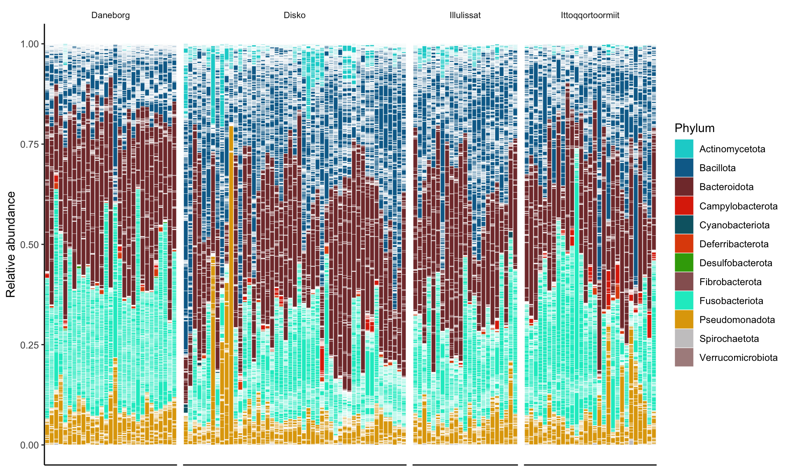
10.1.1 Phylum relative abundances
phylum_summary <- genome_counts_filt %>%
mutate(across(-genome, ~ . / sum(.))) %>%
pivot_longer(-genome, names_to = "sample", values_to = "count") %>%
left_join(sample_metadata, by = join_by(sample == sample)) %>%
left_join(genome_metadata, by = join_by(genome == genome)) %>%
group_by(sample,phylum,locality) %>%
summarise(relabun=sum(count))phylum_summary %>%
group_by(phylum) %>%
summarise(
total_mean = mean(relabun * 100, na.rm = T),
total_sd = sd(relabun * 100, na.rm = T),
Daneborg_mean = mean(relabun[locality == "Daneborg"] * 100, na.rm =T),
Daneborg_sd = sd(relabun[locality == "Daneborg"] * 100, na.rm =T),
Disko_mean = mean(relabun[locality == "Disko"] * 100, na.rm = T),
Disko_sd = sd(relabun[locality == "Disko"] * 100, na.rm =T),
Illulissat_mean = mean(relabun[locality == "Illulissat"] * 100, na.rm = T),
Illulissat_sd = sd(relabun[locality == "Illulissat"] * 100, na.rm = T),
Ittoqqortoormiit_mean = mean(relabun[locality == "Ittoqqortoormiit"] * 100, na.rm = T),
Ittoqqortoormiit_sd = sd(relabun[locality == "Ittoqqortoormiit"] * 100, na.rm = T)) %>%
mutate(
total = str_c(round(total_mean, 4), "±", round(total_sd, 3)),
Daneborg = str_c(round(Daneborg_mean, 4), "±", round(Daneborg_sd, 3)),
Disko = str_c(round(Disko_mean, 4), "±", round(Disko_sd, 3)),
Illulissat = str_c(round(Illulissat_mean, 4), "±", round(Illulissat_sd, 3)),
Ittoqqortoormiit = str_c(round(Ittoqqortoormiit_mean, 4), "±", round(Ittoqqortoormiit_sd, 3)) ) %>%
arrange(-total_mean) %>%
dplyr::select(phylum, total, Daneborg, Disko,Illulissat,Ittoqqortoormiit) %>%
tt()| phylum | total | Daneborg | Disko | Illulissat | Ittoqqortoormiit |
|---|---|---|---|---|---|
| Bacteroidota | 31.9829±12.879 | 36.4581±10.986 | 31.0425±14.351 | 32.1585±12.535 | 28.9573±11.624 |
| Bacillota | 28.627±12.756 | 17.7326±5.876 | 33.636±13.497 | 31.4714±9.738 | 28.8019±12.445 |
| Fusobacteriota | 25.5153±12.448 | 33.9489±9.221 | 18.8885±9.993 | 24.4604±9.394 | 29.1155±14.948 |
| Pseudomonadota | 9.4658±8.949 | 9.8414±3.553 | 9.894±13.071 | 7.9259±3.864 | 9.5879±7.023 |
| Actinomycetota | 2.9645±3.893 | 0.7647±0.955 | 5.2206±5.278 | 3.1687±2.013 | 1.1903±0.878 |
| Campylobacterota | 0.8986±1.531 | 0.5138±0.651 | 0.8071±1.487 | 0.4125±0.631 | 1.8233±2.241 |
| Deferribacterota | 0.3671±0.552 | 0.5412±0.582 | 0.3226±0.477 | 0.21±0.223 | 0.3927±0.759 |
| Spirochaetota | 0.0839±0.158 | 0.0832±0.112 | 0.0727±0.098 | 0.079±0.099 | 0.1077±0.279 |
| Cyanobacteriota | 0.0628±0.245 | 0.0155±0.014 | 0.0962±0.324 | 0.1031±0.335 | 0.0216±0.011 |
| Desulfobacterota | 0.0322±0.099 | 0.1007±0.181 | 0.0199±0.057 | 0.0105±0.019 | 0.0018±0.004 |
| Fibrobacterota | 0±0 | 0±0 | 1e-04±0 | 1e-04±0 | 0±0 |
| Verrucomicrobiota | 0±0 | 0±0 | 0±0 | 0±0 | 0±0 |
10.2 Alpha diversity
richness <- genome_counts_filt %>%
column_to_rownames(var = "genome") %>%
dplyr::select(where(~ !all(. == 0))) %>%
hilldiv(., q = 0) %>%
t() %>%
as.data.frame() %>%
dplyr::rename(richness = 1) %>%
rownames_to_column(var = "sample")
neutral <- genome_counts_filt %>%
column_to_rownames(var = "genome") %>%
dplyr::select(where(~ !all(. == 0))) %>%
hilldiv(., q = 1) %>%
t() %>%
as.data.frame() %>%
dplyr::rename(neutral = 1) %>%
rownames_to_column(var = "sample")
phylogenetic <- genome_counts_filt %>%
column_to_rownames(var = "genome") %>%
dplyr::select(where(~ !all(. == 0))) %>%
hilldiv(., q = 1, tree = genome_tree) %>%
t() %>%
as.data.frame() %>%
dplyr::rename(phylogenetic = 1) %>%
rownames_to_column(var = "sample")
genome_counts_filt_beta <- genome_counts_filt[genome_counts_filt$genome %in% rownames(genome_gifts),]
genome_counts_filt_beta <- genome_counts_filt_beta %>%
column_to_rownames(., "genome") %>%
filter(rowSums(. != 0, na.rm = TRUE) > 0) %>%
select_if(~!all(. == 0))%>%
rownames_to_column(., "genome")
genome_gifts1 <- genome_gifts[rownames(genome_gifts) %in% genome_counts_filt_beta$genome,]
genome_gifts1 <- genome_gifts1[, colSums(genome_gifts1 != 0) > 0]
dist <- genome_gifts1 %>%
to.elements(., GIFT_db) %>%
traits2dist(., method = "gower")
functional <- genome_counts_filt %>%
filter(genome %in% rownames(dist)) %>%
column_to_rownames(var = "genome") %>%
dplyr::select(where(~ !all(. == 0))) %>%
hilldiv(., q = 1, dist = dist) %>%
t() %>%
as.data.frame() %>%
dplyr::rename(functional = 1) %>%
rownames_to_column(var = "sample") %>%
mutate(functional = if_else(is.nan(functional), 1, functional))
alpha_div <- richness %>%
full_join(neutral, by = join_by(sample == sample)) %>%
full_join(phylogenetic, by = join_by(sample == sample))%>%
full_join(functional, by = join_by(sample == sample))alpha_div %>%
pivot_longer(-sample, names_to = "metric", values_to = "value") %>%
mutate(metric=factor(metric,levels=c("richness","neutral","phylogenetic", "functional"))) %>%
left_join(sample_metadata, by = join_by(sample == sample)) %>%
ggplot(aes(y = value, x = locality, group=locality, color=locality, fill=locality)) +
geom_boxplot(alpha = 0.5, outlier.shape = NA) +
geom_jitter(width = 0.2, alpha = 0.5) +
scale_color_manual(name="Locality",
breaks=c("Daneborg","Ittoqqortoormiit","Illulissat","Disko"),
values=c('#41B6C0','#E5D388',"#834630","#76b183"))+
scale_fill_manual(name="Locality",
breaks=c("Daneborg","Ittoqqortoormiit","Illulissat","Disko"),
values=c('#41B6C0','#E5D388',"#834630","#76b183")) +
facet_wrap(. ~factor(metric, labels=c("richness" = "Richness", "neutral" = "Neutral", "phylogenetic" = "Phylogenetic", "functional" = "Functional")), scales = "free", ncol = 5) +
coord_cartesian(xlim = c(1, NA)) +
theme_classic() +
theme(
strip.background = element_blank(),
strip.text = element_text(size = 12, lineheight = 0.6),
panel.grid.minor.x = element_line(size = .1, color = "grey"),
axis.title.x = element_blank(),
axis.title.y = element_blank(),
axis.text.x = element_blank()
)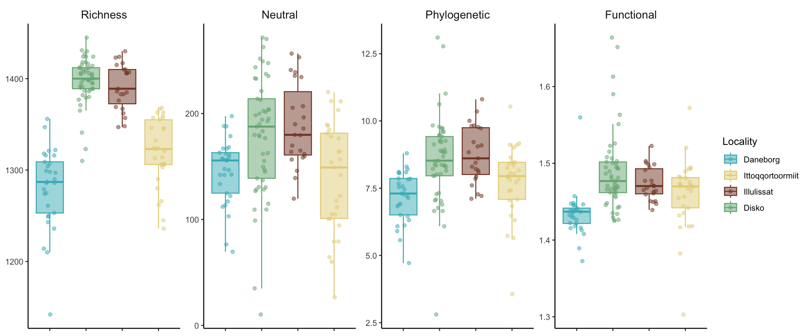
alpha_div %>%
pivot_longer(-sample, names_to = "alpha", values_to = "value") %>%
left_join(sample_metadata, by = join_by(sample == sample)) %>%
group_by(alpha) %>%
summarise(
total_mean = mean(value, na.rm = T),
total_sd = sd(value, na.rm = T),
Daneborg_mean = mean(value[locality == "Daneborg"], na.rm =T),
Daneborg_sd = sd(value[locality == "Daneborg"], na.rm =T),
Disko_mean = mean(value[locality == "Disko"], na.rm = T),
Disko_sd = sd(value[locality == "Disko"], na.rm =T),
Illulissat_mean = mean(value[locality == "Illulissat"], na.rm = T),
Illulissat_sd = sd(value[locality == "Illulissat"], na.rm = T),
Ittoqqortoormiit_mean = mean(value[locality == "Ittoqqortoormiit"], na.rm = T),
Ittoqqortoormiit_sd = sd(value[locality == "Ittoqqortoormiit"], na.rm = T)) %>%
mutate(
total = str_c(round(total_mean, 2), "±", round(total_sd, 2)),
Daneborg = str_c(round(Daneborg_mean, 2), "±", round(Daneborg_sd, 2)),
Disko = str_c(round(Disko_mean, 2), "±", round(Disko_sd, 2)),
Illulissat = str_c(round(Illulissat_mean, 2), "±", round(Illulissat_sd, 2)),
Ittoqqortoormiit = str_c(round(Ittoqqortoormiit_mean, 2), "±", round(Ittoqqortoormiit_sd, 2))
) %>%
arrange(-total_mean) %>%
dplyr::select(alpha,total, Daneborg, Disko,Illulissat,Ittoqqortoormiit) %>%
tt()| alpha | total | Daneborg | Disko | Illulissat | Ittoqqortoormiit |
|---|---|---|---|---|---|
| richness | 1353.32±59.3 | 1280.86±44.59 | 1397.88±25.24 | 1391.57±25.04 | 1320.14±37.06 |
| neutral | 164.47±51.47 | 145.5±30.95 | 179.06±56.53 | 188.91±38.89 | 139.41±51.9 |
| phylogenetic | 8.11±1.46 | 7.19±0.94 | 8.58±1.62 | 8.75±1.06 | 7.74±1.34 |
| functional | 1.47±0.05 | 1.43±0.03 | 1.49±0.05 | 1.47±0.02 | 1.46±0.05 |
alpha_div %>%
pivot_longer(-sample, names_to = "metric", values_to = "value") %>%
mutate(metric=factor(metric,levels=c("richness","neutral","phylogenetic", "functional"))) %>%
left_join(sample_metadata, by = "sample") %>%
group_by(metric) %>%
kruskal_test(value ~ locality) %>%
adjust_pvalue(method = "BH") %>%
filter(p.adj < 0.05) %>%
tt()| metric | .y. | n | statistic | df | p | method | p.adj |
|---|---|---|---|---|---|---|---|
| richness | value | 130 | 91.36875 | 3 | 1.11e-19 | Kruskal-Wallis | 4.440000e-19 |
| neutral | value | 130 | 21.01376 | 3 | 1.05e-04 | Kruskal-Wallis | 1.050000e-04 |
| phylogenetic | value | 130 | 30.22150 | 3 | 1.24e-06 | Kruskal-Wallis | 1.653333e-06 |
| functional | value | 130 | 39.12772 | 3 | 1.63e-08 | Kruskal-Wallis | 3.260000e-08 |
Significant
alpha_div %>%
pivot_longer(-sample, names_to = "metric", values_to = "value") %>%
mutate(metric=factor(metric,levels=c("richness","neutral","phylogenetic", "functional")))%>%
left_join(sample_metadata, by = "sample") %>%
group_by(metric) %>%
wilcox_test(value ~ locality, p.adjust.method = "BH")%>%
filter(p.adj < 0.05)# A tibble: 17 × 10
metric .y. group1 group2 n1 n2 statistic p p.adj p.adj.signif
<fct> <chr> <chr> <chr> <int> <int> <dbl> <dbl> <dbl> <chr>
1 richness value Daneborg Disko 29 49 11 4.91e-13 2.95e-12 ****
2 richness value Daneborg Illulissat 29 23 2.5 1.13e- 9 2.26e- 9 ****
3 richness value Daneborg Ittoqqortoormiit 29 29 198 5.54e- 4 6.65e- 4 ***
4 richness value Disko Ittoqqortoormiit 49 29 1376. 6.36e-12 1.91e-11 ****
5 richness value Illulissat Ittoqqortoormiit 23 29 640. 1.79e- 8 2.68e- 8 ****
6 neutral value Daneborg Disko 29 49 410 2 e- 3 3 e- 3 **
7 neutral value Daneborg Illulissat 29 23 132 1.21e- 4 7.26e- 4 ***
8 neutral value Disko Ittoqqortoormiit 49 29 1006 2 e- 3 3 e- 3 **
9 neutral value Illulissat Ittoqqortoormiit 23 29 503 1 e- 3 3 e- 3 **
10 phylogenetic value Daneborg Disko 29 49 264 1.38e- 6 6.03e- 6 ****
11 phylogenetic value Daneborg Illulissat 29 23 91 2.01e- 6 6.03e- 6 ****
12 phylogenetic value Daneborg Ittoqqortoormiit 29 29 279 2.8 e- 2 3.3 e- 2 *
13 phylogenetic value Disko Ittoqqortoormiit 49 29 967 8 e- 3 1.2 e- 2 *
14 phylogenetic value Illulissat Ittoqqortoormiit 23 29 476 8 e- 3 1.2 e- 2 *
15 functional value Daneborg Disko 29 49 167 1.17e- 9 3.51e- 9 ****
16 functional value Daneborg Illulissat 29 23 38 8.21e-10 3.51e- 9 ****
17 functional value Daneborg Ittoqqortoormiit 29 29 194 3.03e- 4 6.06e- 4 *** Non-significant
alpha_div %>%
pivot_longer(-sample, names_to = "metric", values_to = "value") %>%
mutate(metric=factor(metric,levels=c("richness","neutral","phylogenetic", "functional")))%>%
left_join(sample_metadata, by = "sample") %>%
group_by(metric) %>%
wilcox_test(value ~ locality, p.adjust.method = "BH")%>%
filter(p.adj > 0.05)# A tibble: 7 × 10
metric .y. group1 group2 n1 n2 statistic p p.adj p.adj.signif
<fct> <chr> <chr> <chr> <int> <int> <dbl> <dbl> <dbl> <chr>
1 richness value Disko Illulissat 49 23 654. 0.28 0.28 ns
2 neutral value Daneborg Ittoqqortoormiit 29 29 438 0.793 0.793 ns
3 neutral value Disko Illulissat 49 23 520 0.606 0.727 ns
4 phylogenetic value Disko Illulissat 49 23 524 0.64 0.64 ns
5 functional value Disko Illulissat 49 23 632 0.414 0.414 ns
6 functional value Disko Ittoqqortoormiit 49 29 896 0.055 0.083 ns
7 functional value Illulissat Ittoqqortoormiit 23 29 386 0.341 0.409 ns 10.3 Beta diversity
10.3.1 Richness
PERMANOVA
beta_q0n_mat <- as.matrix(beta_q0n$S)
beta_q0n_filtered <- beta_q0n_mat[rownames(beta_q0n_mat) %in% sample_metadata$sample,
colnames(beta_q0n_mat) %in% sample_metadata$sample]
beta_q0n_dis <- as.dist(beta_q0n_filtered)
sample_metadata_ordered <- sample_metadata %>%
arrange(match(sample,labels(beta_q0n_dis))) %>%
column_to_rownames(., "sample")
all(rownames(sample_metadata_ordered) == labels(beta_q0n_dis))[1] TRUE
Permutation test for homogeneity of multivariate dispersions
Permutation: free
Number of permutations: 999
Response: Distances
Df Sum Sq Mean Sq F N.Perm Pr(>F)
Groups 3 0.023556 0.0078520 25.213 999 0.001 ***
Residuals 126 0.039239 0.0003114
---
Signif. codes: 0 '***' 0.001 '**' 0.01 '*' 0.05 '.' 0.1 ' ' 1
Pairwise comparisons:
(Observed p-value below diagonal, permuted p-value above diagonal)
Daneborg Disko Illulissat Ittoqqortoormiit
Daneborg 1.0000e-03 1.0000e-03 0.934
Disko 3.1089e-08 5.6200e-01 0.001
Illulissat 3.0639e-05 5.7224e-01 0.001
Ittoqqortoormiit 9.3911e-01 1.1403e-10 1.1581e-07 adonis2(beta_q0n_dis ~ locality,
data = sample_metadata_ordered,
permutations = 999) %>%
broom::tidy() %>%
tt()| term | df | SumOfSqs | R2 | statistic | p.value |
|---|---|---|---|---|---|
| Model | 3 | 0.1542007 | 0.3463341 | 22.25301 | 0.001 |
| Residual | 126 | 0.2910361 | 0.6536659 | NA | NA |
| Total | 129 | 0.4452368 | 1.0000000 | NA | NA |
pairs Df SumsOfSqs F.Model R2 p.value p.adjusted sig
1 Daneborg vs Disko 1 0.121851494 56.286195 0.42548805 0.001 0.006 *
2 Daneborg vs Illulissat 1 0.071184389 25.961608 0.34177275 0.001 0.006 *
3 Daneborg vs Ittoqqortoormiit 1 0.034291507 8.976919 0.13815551 0.001 0.006 *
4 Disko vs Illulissat 1 0.002664627 2.418678 0.03339854 0.005 0.030 .
5 Disko vs Ittoqqortoormiit 1 0.044204919 21.823831 0.22309319 0.001 0.006 *
6 Illulissat vs Ittoqqortoormiit 1 0.023295003 9.206997 0.15550522 0.001 0.006 *NMDS
beta_q0n_dis %>%
vegan::metaMDS(., trymax = 500, k = 2, trace=0) %>%
vegan::scores() %>%
as_tibble(., rownames = "sample") %>%
dplyr::left_join(sample_metadata, by = join_by(sample == sample)) %>%
group_by(locality) %>%
mutate(x_cen = mean(NMDS1, na.rm = TRUE)) %>%
mutate(y_cen = mean(NMDS2, na.rm = TRUE)) %>%
ungroup() %>%
ggplot(aes(x = NMDS1, y = NMDS2, color = locality)) +
geom_point(size = 4) +
geom_segment(aes(x = x_cen, y = y_cen, xend = NMDS1, yend = NMDS2), alpha = 0.9, show.legend = FALSE) +
theme_classic() +
theme(
axis.text.x = element_text(size = 12),
axis.text.y = element_text(size = 12),
axis.title = element_text(size = 12, face = "bold"),
axis.text = element_text(face = "bold", size = 12),
panel.background = element_blank(),
axis.line = element_line(size = 0.5, linetype = "solid", colour = "black"),
legend.text = element_text(size = 12),
legend.title = element_text(size = 14),
legend.position = "right", legend.box = "vertical"
) +labs(color='Locality')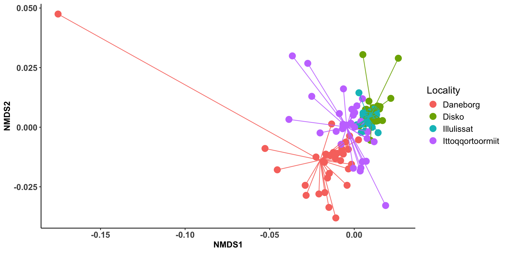
10.3.2 Neutral
PERMANOVA
beta_q1n_mat <- as.matrix(beta_q1n$S)
beta_q1n_filtered <- beta_q1n_mat[rownames(beta_q1n_mat) %in% sample_metadata$sample,
colnames(beta_q1n_mat) %in% sample_metadata$sample]
beta_q1n_dis <- as.dist(beta_q1n_filtered)
sample_metadata_ordered <- sample_metadata %>%
arrange(match(sample,labels(beta_q1n_dis))) %>%
column_to_rownames(., "sample")
all(rownames(sample_metadata_ordered) == labels(beta_q1n_dis))[1] TRUE
Permutation test for homogeneity of multivariate dispersions
Permutation: free
Number of permutations: 999
Response: Distances
Df Sum Sq Mean Sq F N.Perm Pr(>F)
Groups 3 0.45896 0.152988 9.0763 999 0.001 ***
Residuals 126 2.12382 0.016856
---
Signif. codes: 0 '***' 0.001 '**' 0.01 '*' 0.05 '.' 0.1 ' ' 1
Pairwise comparisons:
(Observed p-value below diagonal, permuted p-value above diagonal)
Daneborg Disko Illulissat Ittoqqortoormiit
Daneborg 1.0000e-03 1.9300e-01 0.001
Disko 2.0501e-04 1.4000e-02 0.715
Illulissat 1.5934e-01 1.2160e-02 0.002
Ittoqqortoormiit 2.6393e-05 6.8351e-01 1.0009e-03 adonis2(beta_q1n_dis ~ locality,
data = sample_metadata_ordered,
permutations = 999) %>%
broom::tidy() %>%
tt()| term | df | SumOfSqs | R2 | statistic | p.value |
|---|---|---|---|---|---|
| Model | 3 | 3.623396 | 0.2168465 | 11.62933 | 0.001 |
| Residual | 126 | 13.086099 | 0.7831535 | NA | NA |
| Total | 129 | 16.709495 | 1.0000000 | NA | NA |
pairs Df SumsOfSqs F.Model R2 p.value p.adjusted sig
1 Daneborg vs Disko 1 2.5311610 24.461175 0.24348884 0.001 0.006 *
2 Daneborg vs Illulissat 1 1.6204435 27.193345 0.35227577 0.001 0.006 *
3 Daneborg vs Ittoqqortoormiit 1 1.7059544 18.104455 0.24430994 0.001 0.006 *
4 Disko vs Illulissat 1 0.2904856 2.603815 0.03586334 0.006 0.036 .
5 Disko vs Ittoqqortoormiit 1 0.5892215 4.430845 0.05508887 0.001 0.006 *
6 Illulissat vs Ittoqqortoormiit 1 0.4524663 4.332415 0.07973904 0.001 0.006 *NMDS
beta_q1n_dis %>%
vegan::metaMDS(., trymax = 500, k = 2, trace=0) %>%
vegan::scores() %>%
as_tibble(., rownames = "sample") %>%
dplyr::left_join(sample_metadata, by = join_by(sample == sample)) %>%
group_by(locality) %>%
mutate(x_cen = mean(NMDS1, na.rm = TRUE)) %>%
mutate(y_cen = mean(NMDS2, na.rm = TRUE)) %>%
ungroup() %>%
ggplot(aes(x = NMDS1, y = NMDS2, color = locality)) +
geom_point(size = 3) +
geom_segment(aes(x = x_cen, y = y_cen, xend = NMDS1, yend = NMDS2), alpha = 0.9, show.legend = FALSE) +
scale_color_manual(name="Locality",
breaks=c("Daneborg","Ittoqqortoormiit","Illulissat","Disko"),
values=c('#41B6C0','#E5D388',"#834630","#76b183"))+
theme_classic() +
theme(
axis.text.x = element_text(size = 12),
axis.text.y = element_text(size = 12),
axis.title = element_text(size = 12, face = "bold"),
axis.text = element_text(face = "bold", size = 12),
panel.background = element_blank(),
axis.line = element_line(size = 0.5, linetype = "solid", colour = "black"),
legend.text = element_text(size = 12),
legend.title = element_text(size = 14),
legend.position = "right", legend.box = "vertical"
) +
labs(color='Locality')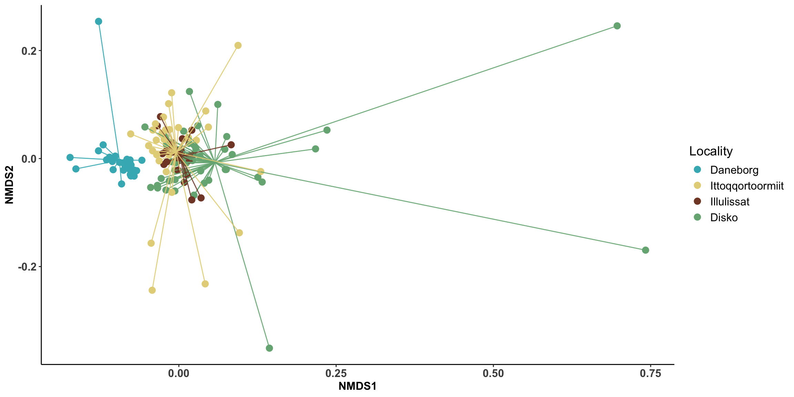
Centroid distance based on the NMDS
betadisper_obj <- betadisper(beta_q1n_dis, sample_metadata_ordered$locality)
dist(betadisper_obj$centroids) Daneborg Disko Illulissat
Disko 0.3699408
Illulissat 0.3582831 0.1258110
Ittoqqortoormiit 0.3411229 0.1734883 0.1757361PCoa
pcoa_res <- ape::pcoa(beta_q1n_dis)
pcoa_df <- data.frame(pcoa_res$vectors) %>%
rownames_to_column("sample") %>%
left_join(sample_metadata, by = "sample")
var_exp <- pcoa_res$values$Relative_eig * 100centroids <- pcoa_df %>%
group_by(locality) %>%
summarise(
Axis.1 = mean(Axis.1),
Axis.2 = mean(Axis.2),
.groups = "drop"
)
ggplot(pcoa_df, aes(Axis.1, Axis.2, color = locality)) +
geom_point(size = 3, alpha = 0.7) +
stat_ellipse(level = 0.95, linewidth = 1) +
geom_point(data = centroids,
aes(Axis.1, Axis.2, fill = locality),
color = "black",
shape = 21,
size = 6,
show.legend = FALSE) +
scale_color_manual(name="Locality",
breaks=c("Daneborg","Ittoqqortoormiit","Illulissat","Disko"),
values=c('#41B6C0','#E5D388',"#834630","#76b183"))+
scale_fill_manual(name="Locality",
breaks=c("Daneborg","Ittoqqortoormiit","Illulissat","Disko"),
values=c('#41B6C0','#E5D388',"#834630","#76b183")) +
labs(
x = paste0("PCoA1 (", round(var_exp[1], 1), "%)"),
y = paste0("PCoA2 (", round(var_exp[2], 1), "%)"),
color = "Dog type"
) +
theme_classic(base_size = 14)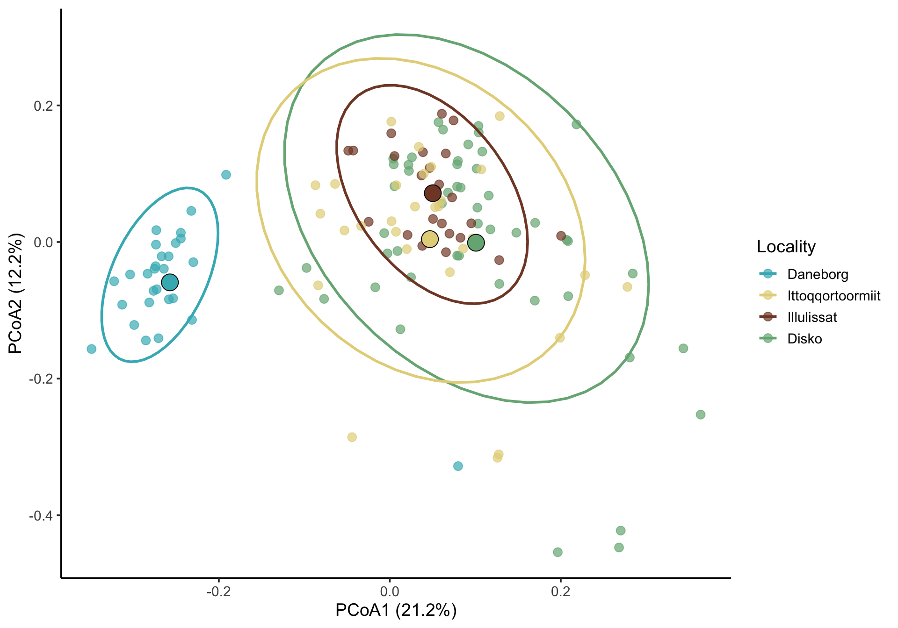
Centroid distances based on the PCoA
centroid_coords <- centroids%>%
select(locality, Axis.1, Axis.2)
dist_mat <- dist(centroid_coords[, c("Axis.1", "Axis.2")]) %>% as.matrix()
dist_table <- as.data.frame(as.table(as.matrix(dist_mat))) %>%
mutate(
group1 = centroids$locality[Var1],
group2 = centroids$locality[Var2],
distance = Freq
) %>%
select(-Var1, -Var2, -Freq)ggplot(dist_table, aes(x = group1, y = group2, fill = distance)) +
geom_tile() +
scale_fill_viridis_c() +
theme_minimal() +
theme(axis.text.x = element_text(angle=45, hjust=1),
axis.title = element_blank()) +
labs(fill="Centroids distance")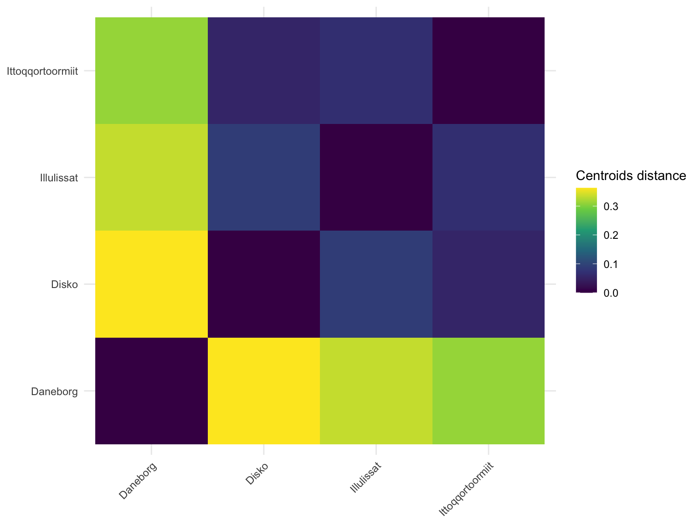
10.3.3 Phylogenetic
PERMANOVA
beta_q1p_mat <- as.matrix(beta_q1p$S)
beta_q1p_filtered <- beta_q1n_mat[rownames(beta_q1p_mat) %in% sample_metadata$sample,
colnames(beta_q1p_mat) %in% sample_metadata$sample]
beta_q1p_dis <- as.dist(beta_q1p_filtered)
sample_metadata_row <- column_to_rownames(sample_metadata, "sample")
sample_metadata_ordered <- sample_metadata_row[labels(beta_q1p_dis), ]
sample_metadata_ordered_row <- sample_metadata_ordered %>%
rownames_to_column("sample")
betadisper(beta_q1p_dis, sample_metadata_ordered$locality) %>% permutest(., pairwise = TRUE)
Permutation test for homogeneity of multivariate dispersions
Permutation: free
Number of permutations: 999
Response: Distances
Df Sum Sq Mean Sq F N.Perm Pr(>F)
Groups 3 0.45896 0.152988 9.0763 999 0.001 ***
Residuals 126 2.12382 0.016856
---
Signif. codes: 0 '***' 0.001 '**' 0.01 '*' 0.05 '.' 0.1 ' ' 1
Pairwise comparisons:
(Observed p-value below diagonal, permuted p-value above diagonal)
Daneborg Disko Illulissat Ittoqqortoormiit
Daneborg 1.0000e-03 1.6800e-01 0.001
Disko 2.0501e-04 1.0000e-02 0.707
Illulissat 1.5934e-01 1.2160e-02 0.002
Ittoqqortoormiit 2.6393e-05 6.8351e-01 1.0009e-03 adonis2(beta_q1p_dis ~ locality,
data = sample_metadata_ordered,
permutations = 999) %>%
broom::tidy() %>%
tt()| term | df | SumOfSqs | R2 | statistic | p.value |
|---|---|---|---|---|---|
| Model | 3 | 3.623396 | 0.2168465 | 11.62933 | 0.001 |
| Residual | 126 | 13.086099 | 0.7831535 | NA | NA |
| Total | 129 | 16.709495 | 1.0000000 | NA | NA |
pairs Df SumsOfSqs F.Model R2 p.value p.adjusted sig
1 Daneborg vs Disko 1 2.5311610 24.461175 0.24348884 0.001 0.006 *
2 Daneborg vs Illulissat 1 1.6204435 27.193345 0.35227577 0.001 0.006 *
3 Daneborg vs Ittoqqortoormiit 1 1.7059544 18.104455 0.24430994 0.001 0.006 *
4 Disko vs Illulissat 1 0.2904856 2.603815 0.03586334 0.003 0.018 .
5 Disko vs Ittoqqortoormiit 1 0.5892215 4.430845 0.05508887 0.001 0.006 *
6 Illulissat vs Ittoqqortoormiit 1 0.4524663 4.332415 0.07973904 0.001 0.006 *NMDS
beta_q1p_dis %>%
vegan::metaMDS(., trymax = 500, k = 2, trace=0) %>%
vegan::scores() %>%
as_tibble(., rownames = "sample") %>%
dplyr::left_join(sample_metadata, by = join_by(sample == sample)) %>%
group_by(locality) %>%
mutate(x_cen = median(NMDS1, na.rm = TRUE)) %>%
mutate(y_cen = median(NMDS2, na.rm = TRUE)) %>%
ungroup() %>%
ggplot(aes(x = NMDS1, y = NMDS2, color = locality)) +
geom_point(size = 4) +
geom_segment(aes(x = x_cen, y = y_cen, xend = NMDS1, yend = NMDS2), alpha = 0.9, show.legend = FALSE) +
scale_color_manual(
name = "Locality",
breaks = c("Daneborg", "Ittoqqortoormiit", "Illulissat", "Disko"),
values = c('#41B6C0', '#E5D388', "#834630", "#76b183")
) +
theme_classic() +
theme(
axis.text.x = element_text(size = 12),
axis.text.y = element_text(size = 12),
axis.title = element_text(size = 20, face = "bold"),
axis.text = element_text(face = "bold", size = 18),
panel.background = element_blank(),
axis.line = element_line(size = 0.5, linetype = "solid", colour = "black"),
legend.text = element_text(size = 16),
legend.title = element_text(size = 18),
legend.position = "right", legend.box = "vertical"
) +
labs(color='Locality')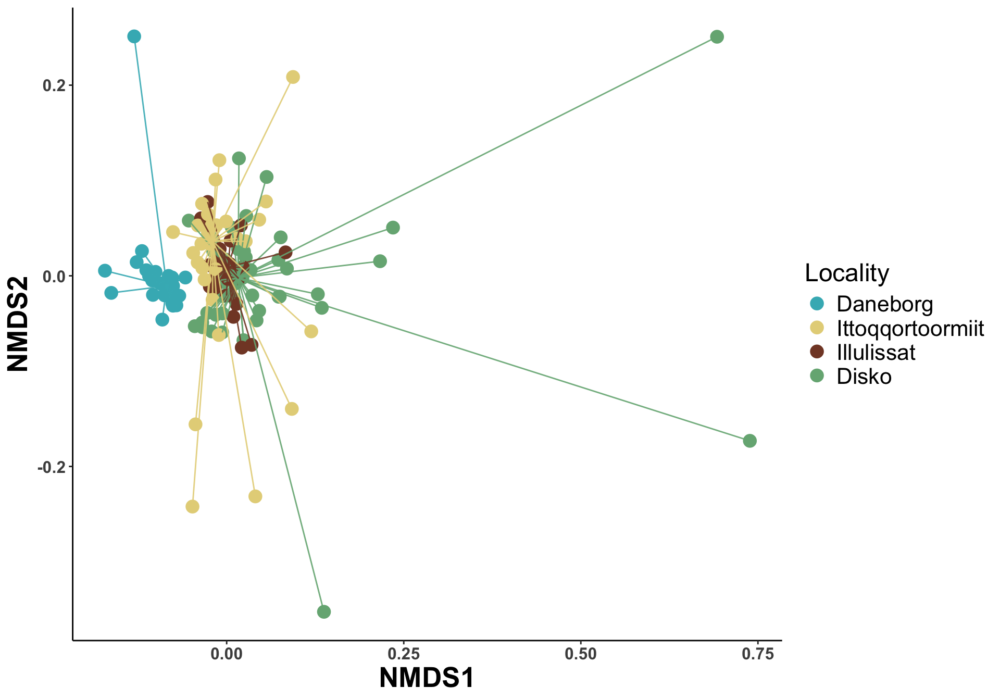
10.4 Is there any location closer to domestic dogs?
set.seed(1234)
load("data/data.Rdata")
load("data/beta.Rdata")
load("data/genome_gifts.RData")
genome_metadata <- genome_metadata %>%
mutate(phylum = case_when(
phylum == "Bacillota_A" ~ "Bacillota",
phylum == "Bacillota_C" ~ "Bacillota",
phylum == "Bacillota_B" ~ "Bacillota",
phylum == "Bacillota_I" ~ "Bacillota",
TRUE ~ phylum))
remove_sled <- read_csv("data/sample_metadata.csv") %>%
filter(season=="winter")
sample_metadata <- sample_metadata %>%
filter(!sample %in% remove_sled$sample) %>%
mutate(
dog_group = case_when(
breed == "Wolf" ~ "wolf",
locality == "Disko" ~ "Disko",
locality == "Daneborg" ~ "Daneborg",
locality == "Illulissat" ~ "Illulissat",
locality == "Ittoqqortoormiit" ~ "Ittoqqortoormiit",
TRUE ~ "domestic"
)
)
genome_counts_filt <- genome_counts_filt %>%
select(one_of(c("genome",sample_metadata$sample)))%>%
filter(rowSums(. != 0, na.rm = TRUE) > 0) %>%
select_if(~!all(. == 0))
genome_metadata <- genome_metadata %>%
semi_join(., genome_counts_filt, by = "genome") %>%
arrange(match(genome,genome_counts_filt$genome))
genome_tree <- keep.tip(genome_tree, tip=genome_metadata$genome)Neutral
beta_q1n_mat <- as.matrix(beta_q1n$S)
beta_q1n_filtered <- beta_q1n_mat[rownames(beta_q1n_mat) %in% sample_metadata$sample,
colnames(beta_q1n_mat) %in% sample_metadata$sample]
beta_q1n_distance <- as.dist(beta_q1n_filtered)
sample_metadata_ordered <- sample_metadata %>%
arrange(match(sample,labels(beta_q1n_distance))) %>%
column_to_rownames(., "sample")
all(rownames(sample_metadata_ordered) == labels(beta_q1n_distance))[1] TRUE
Permutation test for homogeneity of multivariate dispersions
Permutation: free
Number of permutations: 999
Response: Distances
Df Sum Sq Mean Sq F N.Perm Pr(>F)
Groups 5 5.2405 1.04810 71.219 999 0.001 ***
Residuals 316 4.6504 0.01472
---
Signif. codes: 0 '***' 0.001 '**' 0.01 '*' 0.05 '.' 0.1 ' ' 1
Pairwise comparisons:
(Observed p-value below diagonal, permuted p-value above diagonal)
Daneborg Disko domestic Illulissat Ittoqqortoormiit wolf
Daneborg 2.0000e-03 1.0000e-03 1.6000e-01 1.0000e-03 0.024
Disko 2.0447e-04 1.0000e-03 1.2000e-02 6.7000e-01 0.797
domestic 2.1863e-33 1.6300e-20 1.0000e-03 1.0000e-03 0.001
Illulissat 1.6193e-01 1.2127e-02 7.6194e-25 1.0000e-03 0.053
Ittoqqortoormiit 2.4566e-05 6.7931e-01 1.7281e-14 9.6639e-04 0.550
wolf 2.2422e-02 8.1559e-01 1.6387e-06 5.1575e-02 5.6500e-01 Analysis of Variance Table
Response: Distances
Df Sum Sq Mean Sq F value Pr(>F)
Groups 3 0.45896 0.152988 9.0763 1.743e-05 ***
Residuals 126 2.12382 0.016856
---
Signif. codes: 0 '***' 0.001 '**' 0.01 '*' 0.05 '.' 0.1 ' ' 1adonis2(beta_q1n_distance ~ dog_group,
data = sample_metadata_ordered,
permutations = 999) %>%
broom::tidy() %>%
tt()| term | df | SumOfSqs | R2 | statistic | p.value |
|---|---|---|---|---|---|
| Model | 5 | 19.09529 | 0.2173397 | 17.55023 | 0.001 |
| Residual | 316 | 68.76389 | 0.7826603 | NA | NA |
| Total | 321 | 87.85918 | 1.0000000 | NA | NA |
pairs Df SumsOfSqs F.Model R2 p.value p.adjusted sig
1 domestic vs Daneborg 1 5.8501226 21.965436 0.09388325 0.001 0.015 .
2 domestic vs Disko 1 7.3508868 27.824080 0.10708815 0.001 0.015 .
3 domestic vs Illulissat 1 5.1692154 18.877891 0.08394730 0.001 0.015 .
4 domestic vs Ittoqqortoormiit 1 5.3153917 19.195349 0.08302654 0.001 0.015 .
5 domestic vs wolf 1 1.7737904 6.053045 0.03087453 0.001 0.015 .
6 Daneborg vs Disko 1 2.5311610 24.461175 0.24348884 0.001 0.015 .
7 Daneborg vs Illulissat 1 1.6204435 27.193345 0.35227577 0.001 0.015 .
8 Daneborg vs Ittoqqortoormiit 1 1.7059544 18.104455 0.24430994 0.001 0.015 .
9 Daneborg vs wolf 1 0.9129808 13.798713 0.28868378 0.001 0.015 .
10 Disko vs Illulissat 1 0.2904856 2.603815 0.03586334 0.006 0.090
11 Disko vs Ittoqqortoormiit 1 0.5892215 4.430845 0.05508887 0.001 0.015 .
12 Disko vs wolf 1 1.0265851 7.830545 0.12664526 0.001 0.015 .
13 Illulissat vs Ittoqqortoormiit 1 0.4524663 4.332415 0.07973904 0.001 0.015 .
14 Illulissat vs wolf 1 0.9441435 12.045594 0.30079699 0.001 0.015 .
15 Ittoqqortoormiit vs wolf 1 0.9352703 7.079120 0.17232891 0.001 0.015 .betadisper_obj <- betadisper(beta_q1n_distance, sample_metadata_ordered$dog_group)
dist(betadisper_obj$centroids) Daneborg Disko domestic Illulissat Ittoqqortoormiit
Disko 0.3717510
domestic 0.4811081 0.4577970
Illulissat 0.3604351 0.1321261 0.5051719
Ittoqqortoormiit 0.3437663 0.1770872 0.4739566 0.1807827
wolf 0.4080005 0.4112941 0.5083511 0.4276591 0.4081683beta_q1n_distance %>%
vegan::metaMDS(., trymax = 500, k = 2, trace=0) %>%
vegan::scores() %>%
as_tibble(., rownames = "sample") %>%
dplyr::left_join(sample_metadata, by = join_by(sample == sample)) %>%
group_by(dog_group) %>%
mutate(x_cen = mean(NMDS1, na.rm = TRUE)) %>%
mutate(y_cen = mean(NMDS2, na.rm = TRUE)) %>%
ungroup() %>%
ggplot(aes(x = NMDS1, y = NMDS2, color = dog_group)) +
geom_point(size = 3) +
geom_segment(aes(x = x_cen, y = y_cen, xend = NMDS1, yend = NMDS2), alpha = 0.9, show.legend = FALSE) +
scale_color_manual(name="Dog group",
breaks=c("domestic","Daneborg","Ittoqqortoormiit","Illulissat","Disko", "wolf"),
values=c("#b30000",'#41B6C0','#E5D388',"#834630","#76b183","#fef0d9"))+
theme_classic() +
theme(
axis.text.x = element_text(size = 12),
axis.text.y = element_text(size = 12),
axis.title = element_text(size = 12, face = "bold"),
axis.text = element_text(face = "bold", size = 12),
panel.background = element_blank(),
axis.line = element_line(size = 0.5, linetype = "solid", colour = "black"),
legend.text = element_text(size = 12),
legend.title = element_text(size = 14),
legend.position = "right", legend.box = "vertical"
)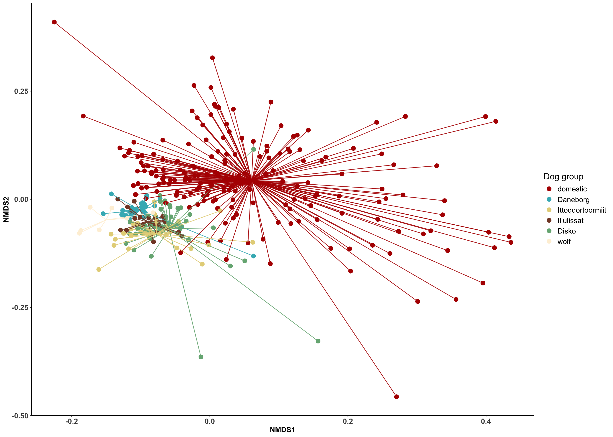
10.5 Differential abundance
sample_metadata <- sample_metadata %>%
filter(!sample %in% remove_sled$sample) %>%
filter(country == "Greenland")
genome_counts_filt <- genome_counts_filt %>%
select(one_of(c("genome",sample_metadata$sample)))%>%
filter(rowSums(. != 0, na.rm = TRUE) > 0) %>%
select_if(~!all(. == 0))
genome_metadata <- genome_metadata %>%
semi_join(., genome_counts_filt, by = "genome") %>%
arrange(match(genome,genome_counts_filt$genome))
genome_tree <- keep.tip(genome_tree, tip=genome_metadata$genome)
phylo_samples <- sample_metadata %>%
filter(country=="Greenland") %>%
column_to_rownames("sample") %>%
sample_data()
phylo_genome <- genome_counts_filt %>%
select(one_of(c("genome", rownames(phylo_samples)))) %>%
column_to_rownames("genome") %>%
otu_table(., taxa_are_rows = TRUE)
phylo_taxonomy <- genome_metadata %>%
filter(genome %in% rownames(phylo_genome)) %>%
mutate(genome2 = genome) %>%
column_to_rownames("genome2") %>%
dplyr::select(domain, phylum, class, order, family, genus, species, genome) %>%
as.matrix() %>%
tax_table()
physeq_genome_green <- phyloseq(phylo_genome, phylo_taxonomy, phylo_samples)10.5.1 Differences across localities
10.5.1.1 MAG level
load(file = "data/ancombc_sled_greenland.Rdata")
region_pairs_sled <- combn(unique(sample_metadata$locality), 2, simplify = FALSE)results_sled <- lapply(region_pairs_sled, function(pair) {
subset_idx <- sample_metadata$locality %in% pair
sled <- ancombc2(
data = prune_samples(subset_idx, physeq_genome_green),
fix_formula = "locality",
group = "locality",
p_adj_method = "BH",
pseudo_sens = TRUE,
prv_cut = 0.05,
lib_cut = 1000,
s0_perc = 0.05,
struc_zero = TRUE,
neg_lb = FALSE,
alpha = 0.05,
n_cl = 2,
verbose = TRUE,
global = FALSE,
pairwise = FALSE,
dunnet = FALSE,
trend = FALSE,
iter_control = list(
tol = 1e-5,
max_iter = 50,
verbose = FALSE
),
em_control = list(tol = 1e-5, max_iter = 100),
mdfdr_control = list(fwer_ctrl_method = "BH", B = 100),
trend_control = NULL
)
sled_table <- sled$res
sled_table$comparison <- paste(pair, collapse = "_vs_")
return(sled_table)
})
names(results_sled) <- sapply(region_pairs_sled, paste, collapse = "_vs_")
save(results_sled, file = "data/ancombc_sled_greenland.Rdata")extract_pair <- function(res, pair) {
tab <- res
if (is.null(tab) || nrow(tab) == 0) return(NULL)
# Identify country coefficient column
coef_cols <- grep("^lfc_locality", colnames(tab), value = TRUE)
coef_cols <- coef_cols[!grepl("\\(Intercept\\)", coef_cols)]
if (length(coef_cols) == 0) return(NULL)
coef <- coef_cols[1] # only one since pairwise subset
country_nonref <- sub("^lfc_locality", "", coef)
country_ref <- setdiff(pair, country_nonref)
tibble(
taxon = tab$taxon,
model_term = coef,
non_reference = country_nonref,
reference = country_ref,
logFC = tab[[coef]],
q_value = tab[[sub("^lfc_", "q_", coef)]],
diff_abn = tab[[sub("^lfc_", "diff_", coef)]],
enriched_in = ifelse(tab[[coef]] > 0, country_nonref, country_ref),
depleted_in = ifelse(tab[[coef]] > 0, country_ref, country_nonref),
comparison = paste(pair, collapse = "_vs_")
)
}
pairwise_tables_greenland <- map2(
results_sled,
region_pairs_sled,
extract_pair
)
pairwise_tables_greenland <- discard(pairwise_tables_greenland, is.null)
final_table_tables_greenland <- bind_rows(pairwise_tables_greenland)
nrow(final_table_tables_greenland)[1] 8634
Daneborg_vs_Disko Daneborg_vs_Illulissat Daneborg_vs_Ittoqqortoormiit Disko_vs_Illulissat Disko_vs_Ittoqqortoormiit Illulissat_vs_Ittoqqortoormiit
1429 1429 1428 1453 1449 1446 sig_taxa_tables_greenland <- final_table_tables_greenland %>%
filter(q_value < 0.05) %>%
left_join(genome_metadata %>% select(genome, phylum), by=join_by("taxon"=="genome"))taxonomy <- data.frame(physeq_genome_green@tax_table) %>%
distinct(phylum) %>%
rownames_to_column(., "taxon")
unique_contrasts <- unique(sig_taxa_tables_greenland$comparison)
colors_alphabetic <- read_tsv("https://raw.githubusercontent.com/earthhologenome/EHI_taxonomy_colour/main/ehi_phylum_colors.tsv") %>%
mutate_at(vars(phylum), ~ str_replace(., "[dpcofgs]__", "")) %>%
right_join(taxonomy, by = join_by(phylum == phylum)) %>%
dplyr::select(phylum, colors) %>%
mutate(colors = str_c(colors, "80")) %>%
unique() %>%
dplyr::arrange(phylum)
for (c in unique_contrasts) {
subset_data <- sig_taxa_tables_greenland %>%
filter(comparison == c) %>%
arrange(enriched_in, logFC) %>%
mutate(taxon_ordered = factor(taxon, levels = unique(taxon)))
non_ref <- unique(subset_data$non_reference)
ref <- unique(subset_data$reference)
title <- paste0("Enriched in ", ref, " (− LFC) vs ", "Enriched in ", non_ref, " (+ LFC)")
tax_color <- as.data.frame(unique(subset_data$phylum)) %>%
rename(phylum = 1) %>%
left_join(., colors_alphabetic, by = "phylum") %>%
dplyr::arrange(phylum) %>%
dplyr::select(colors) %>%
pull()
p <- ggplot(subset_data, aes(x = taxon_ordered, y = logFC, fill = phylum)) +
geom_bar(stat = "identity") +
coord_flip() +
theme(
panel.background = element_blank(),
axis.line = element_line(size = 0.5, linetype = "solid", colour = "black"),
axis.text.x = element_text(size = 12),
axis.text.y = element_text(size = 6),
axis.title = element_text(size = 14, face = "bold"),
legend.text = element_text(size = 12),
legend.title = element_text(size = 14, face = "bold"),
legend.position = "right",
legend.box = "vertical",
plot.title = element_text(size = 14, face = "bold", hjust = 0.5)
) +
scale_fill_manual(values = tax_color) +
labs(
title = title,
x = "MAGs",
y = "Log-Fold Change",
fill = "Phylum"
)
ggsave(paste0("Figures/Fig_", gsub(" ", "_", c), ".png"), plot = p, width = 10, height = 25, dpi = 300)
}Daneborg_vs_Disko
Enriched in Daneborg
sig_taxa_tables_greenland %>%
left_join(genome_metadata %>% select(-phylum), by = join_by("taxon" == "genome")) %>%
filter(comparison == "Daneborg_vs_Disko") %>%
filter(logFC < 0) %>%
nrow()[1] 374sig_taxa_tables_greenland %>%
left_join(genome_metadata %>% select(-phylum), by = join_by("taxon" == "genome")) %>%
filter(comparison == "Daneborg_vs_Disko") %>%
filter(logFC < 0) %>%
group_by(phylum, family, genus, species) %>%
summarise(Mags = n(), .groups = "drop") %>%
arrange(-Mags)# A tibble: 160 × 5
phylum family genus species Mags
<chr> <chr> <chr> <chr> <int>
1 Fusobacteriota Fusobacteriaceae Fusobacterium_B "Fusobacterium_B sp900554885" 40
2 Fusobacteriota Fusobacteriaceae Fusobacterium_B "Fusobacterium_B sp900541465" 38
3 Fusobacteriota Fusobacteriaceae Fusobacterium_A "Fusobacterium_A sp900555845" 27
4 Pseudomonadota Succinivibrionaceae Anaerobiospirillum "Anaerobiospirillum succiniciproducens" 21
5 Fusobacteriota Fusobacteriaceae Fusobacterium_A "Fusobacterium_A sp900543175" 16
6 Pseudomonadota Succinivibrionaceae Anaerobiospirillum "Anaerobiospirillum sp900543125" 13
7 Actinomycetota Coriobacteriaceae Collinsella "Collinsella intestinalis" 11
8 Bacteroidota Bacteroidaceae Phocaeicola "" 6
9 Bacillota CAG-508 CAG-269 "" 5
10 Bacteroidota Bacteroidaceae Phocaeicola "Phocaeicola plebeius_A" 5
# ℹ 150 more rowsEnriched in Disko
sig_taxa_tables_greenland %>%
left_join(genome_metadata %>% select(-phylum), by = join_by("taxon" == "genome")) %>%
filter(comparison == "Daneborg_vs_Disko") %>%
filter(logFC > 0) %>%
nrow()[1] 426sig_taxa_tables_greenland %>%
left_join(genome_metadata %>% select(-phylum), by = join_by("taxon" == "genome")) %>%
filter(comparison == "Daneborg_vs_Disko") %>%
filter(logFC > 0) %>%
group_by(phylum, family, genus, species) %>%
summarise(Mags = n(), .groups = "drop") %>%
arrange(-Mags)# A tibble: 274 × 5
phylum family genus species Mags
<chr> <chr> <chr> <chr> <int>
1 Bacillota Oscillospiraceae Faecousia "Faecousia sp937890525" 19
2 Actinomycetota Coriobacteriaceae Collinsella "Collinsella sp902470815" 16
3 Bacillota Oscillospiraceae Faecousia "" 15
4 Actinomycetota Coriobacteriaceae Collinsella "" 10
5 Actinomycetota Coriobacteriaceae Collinsella "Collinsella sp902364775" 10
6 Pseudomonadota Enterobacteriaceae Escherichia "Escherichia coli" 7
7 Pseudomonadota Burkholderiaceae Ralstonia "Ralstonia mannitolilytica" 6
8 Actinomycetota Coriobacteriaceae Collinsella "Collinsella intestinalis" 5
9 Actinomycetota Coriobacteriaceae Collinsella "Collinsella tanakaei" 5
10 Actinomycetota Bifidobacteriaceae Bifidobacterium "Bifidobacterium globosum" 4
# ℹ 264 more rowsDaneborg_vs_Illulissat
Enriched in Daneborg
sig_taxa_tables_greenland %>%
left_join(genome_metadata %>% select(-phylum), by = join_by("taxon" == "genome")) %>%
filter(comparison == "Daneborg_vs_Illulissat") %>%
filter(logFC < 0) %>%
nrow()[1] 361sig_taxa_tables_greenland %>%
left_join(genome_metadata %>% select(-phylum), by = join_by("taxon" == "genome")) %>%
filter(comparison == "Daneborg_vs_Illulissat") %>%
filter(logFC < 0) %>%
group_by(phylum, family, genus, species) %>%
summarise(Mags = n(), .groups = "drop") %>%
arrange(-Mags)# A tibble: 156 × 5
phylum family genus species Mags
<chr> <chr> <chr> <chr> <int>
1 Actinomycetota Coriobacteriaceae Collinsella "Collinsella intestinalis" 47
2 Fusobacteriota Fusobacteriaceae Fusobacterium_B "Fusobacterium_B sp900554885" 39
3 Fusobacteriota Fusobacteriaceae Fusobacterium_A "Fusobacterium_A sp900555845" 26
4 Pseudomonadota Succinivibrionaceae Anaerobiospirillum "Anaerobiospirillum succiniciproducens" 17
5 Fusobacteriota Fusobacteriaceae Fusobacterium_A "Fusobacterium_A sp900543175" 16
6 Fusobacteriota Fusobacteriaceae Fusobacterium_B "Fusobacterium_B sp900541465" 13
7 Pseudomonadota Succinivibrionaceae Anaerobiospirillum "Anaerobiospirillum sp900543125" 13
8 Bacillota CAG-508 CAG-269 "" 6
9 Bacteroidota Bacteroidaceae Phocaeicola "" 5
10 Bacillota Selenomonadaceae Megamonas "Megamonas funiformis" 4
# ℹ 146 more rowsEnriched in Illulissat
sig_taxa_tables_greenland %>%
left_join(genome_metadata %>% select(-phylum), by = join_by("taxon" == "genome")) %>%
filter(comparison == "Daneborg_vs_Illulissat") %>%
filter(logFC > 0) %>%
nrow()[1] 340sig_taxa_tables_greenland %>%
left_join(genome_metadata %>% select(-phylum), by = join_by("taxon" == "genome")) %>%
filter(comparison == "Daneborg_vs_Illulissat") %>%
filter(logFC > 0) %>%
group_by(phylum, family, genus, species) %>%
summarise(Mags = n(), .groups = "drop") %>%
arrange(-Mags)# A tibble: 213 × 5
phylum family genus species Mags
<chr> <chr> <chr> <chr> <int>
1 Bacillota Oscillospiraceae Faecousia "Faecousia sp937890525" 23
2 Actinomycetota Coriobacteriaceae Collinsella "Collinsella sp902470815" 12
3 Actinomycetota Coriobacteriaceae Collinsella "Collinsella sp902364775" 10
4 Actinomycetota Coriobacteriaceae Collinsella "" 8
5 Bacillota Oscillospiraceae Faecousia "" 8
6 Pseudomonadota Burkholderiaceae Ralstonia "Ralstonia mannitolilytica" 6
7 Actinomycetota Bifidobacteriaceae Bifidobacterium "Bifidobacterium globosum" 4
8 Actinomycetota Coriobacteriaceae Collinsella "Collinsella sp900555585" 4
9 Fusobacteriota Fusobacteriaceae Fusobacterium_B "Fusobacterium_B sp900554885" 4
10 Actinomycetota Coriobacteriaceae Collinsella "Collinsella intestinalis" 3
# ℹ 203 more rowsDaneborg_vs_Ittoqqortoormiit Enriched in Daneborg
sig_taxa_tables_greenland %>%
left_join(genome_metadata %>% select(-phylum), by = join_by("taxon" == "genome")) %>%
filter(comparison == "Daneborg_vs_Ittoqqortoormiit") %>%
filter(logFC < 0) %>%
nrow()[1] 428sig_taxa_tables_greenland %>%
left_join(genome_metadata %>% select(-phylum), by = join_by("taxon" == "genome")) %>%
filter(comparison == "Daneborg_vs_Ittoqqortoormiit") %>%
filter(logFC < 0) %>%
group_by(phylum, family, genus, species) %>%
summarise(Mags = n(), .groups = "drop") %>%
arrange(-Mags)# A tibble: 160 × 5
phylum family genus species Mags
<chr> <chr> <chr> <chr> <int>
1 Actinomycetota Coriobacteriaceae Collinsella "Collinsella intestinalis" 90
2 Fusobacteriota Fusobacteriaceae Fusobacterium_B "Fusobacterium_B sp900554885" 40
3 Fusobacteriota Fusobacteriaceae Fusobacterium_B "Fusobacterium_B sp900541465" 21
4 Fusobacteriota Fusobacteriaceae Fusobacterium_A "Fusobacterium_A sp900555845" 19
5 Pseudomonadota Succinivibrionaceae Anaerobiospirillum "Anaerobiospirillum succiniciproducens" 18
6 Fusobacteriota Fusobacteriaceae Fusobacterium_A "Fusobacterium_A sp900543175" 16
7 Pseudomonadota Succinivibrionaceae Anaerobiospirillum "Anaerobiospirillum sp900543125" 12
8 Bacillota Oscillospiraceae Faecousia "" 10
9 Bacteroidota Bacteroidaceae Phocaeicola "" 6
10 Bacillota Anaeroplasmataceae CALUXS01 "" 4
# ℹ 150 more rowsEnriched in Ittoqqortoormiit
sig_taxa_tables_greenland %>%
left_join(genome_metadata %>% select(-phylum), by = join_by("taxon" == "genome")) %>%
filter(comparison == "Daneborg_vs_Ittoqqortoormiit") %>%
filter(logFC > 0) %>%
nrow()[1] 217sig_taxa_tables_greenland %>%
left_join(genome_metadata %>% select(-phylum), by = join_by("taxon" == "genome")) %>%
filter(comparison == "Daneborg_vs_Ittoqqortoormiit") %>%
filter(logFC > 0) %>%
group_by(phylum, family, genus, species) %>%
summarise(Mags = n(), .groups = "drop") %>%
arrange(-Mags)# A tibble: 164 × 5
phylum family genus species Mags
<chr> <chr> <chr> <chr> <int>
1 Actinomycetota Coriobacteriaceae Collinsella "Collinsella sp902364775" 9
2 Actinomycetota Coriobacteriaceae Collinsella "" 7
3 Bacillota Lactobacillaceae Ligilactobacillus "Ligilactobacillus salivarius" 4
4 Pseudomonadota Enterobacteriaceae Escherichia "Escherichia coli" 4
5 Actinomycetota Bifidobacteriaceae Bifidobacterium "Bifidobacterium globosum" 3
6 Actinomycetota Coriobacteriaceae Collinsella "Collinsella sp008014645" 3
7 Actinomycetota Coriobacteriaceae Collinsella "Collinsella tanakaei" 3
8 Bacillota Selenomonadaceae Megamonas "" 3
9 Campylobacterota Campylobacteraceae Campylobacter_D "Campylobacter_D upsaliensis" 3
10 Campylobacterota Helicobacteraceae Helicobacter_G "" 3
# ℹ 154 more rows10.5.2 Differences between military and civilian-owned dogs
10.5.2.1 MAG level
ancom_rand_output = ancombc2(
data = physeq_genome_green,
assay_name = "counts",
fix_formula = "dog_group",
p_adj_method = "BH",
pseudo_sens = TRUE,
prv_cut = 0,
lib_cut = 0,
s0_perc = 0.05,
group = "dog_group",
struc_zero = TRUE,
neg_lb = FALSE,
alpha = 0.05,
n_cl = 2,
verbose = TRUE,
global = FALSE,
pairwise = FALSE,
dunnet = FALSE,
trend = FALSE,
iter_control = list(
tol = 1e-5,
max_iter = 50,
verbose = FALSE
),
em_control = list(tol = 1e-5, max_iter = 100),
mdfdr_control = list(fwer_ctrl_method = "BH", B = 100),
trend_control = NULL
)
save(ancom_rand_output,
file = "data/ancombc_daneborg_others.Rdata")load("data/ancombc_daneborg_others.Rdata")
taxonomy <- data.frame(physeq_genome_green@tax_table) %>%
rownames_to_column(., "taxon")
ancombc_rand_table_mag <- ancom_rand_output$res %>%
dplyr::select(taxon, lfc_dog_groupmilitary, q_dog_groupmilitary) %>%
filter(q_dog_groupmilitary < 0.05) %>%
dplyr::arrange(q_dog_groupmilitary) %>%
merge(., taxonomy, by="taxon") %>%
dplyr::arrange(lfc_dog_groupmilitary)
colors_alphabetic <- read_tsv("https://raw.githubusercontent.com/earthhologenome/EHI_taxonomy_colour/main/ehi_phylum_colors.tsv") %>%
mutate_at(vars(phylum), ~ str_replace(., "[dpcofgs]__", "")) %>%
right_join(taxonomy, by=join_by(phylum == phylum)) %>%
dplyr::select(phylum, colors) %>%
mutate(colors = str_c(colors, "80")) %>%
unique() %>%
dplyr::arrange(phylum)
tax_table <- as.data.frame(unique(ancombc_rand_table_mag$phylum))
colnames(tax_table)[1] <- "phylum"
tax_color <- merge(tax_table, colors_alphabetic, by="phylum")%>%
dplyr::arrange(phylum) %>%
dplyr::select(colors) %>%
pull()ancombc_rand_table_mag %>%
mutate(genome=factor(taxon,levels=ancombc_rand_table_mag$taxon)) %>%
ggplot(., aes(x=lfc_dog_groupmilitary, y=forcats::fct_reorder(genome,lfc_dog_groupmilitary), fill=phylum)) + #forcats::fct_rev()
geom_col() +
scale_fill_manual(values=tax_color) +
geom_hline(yintercept=0) +
geom_text(aes(3, 445), label = "Enriched in\n military dogs", color="#666666") +
geom_text(aes(-5, 145), label = "Enriched in\n civilian-owned\n dogs", color="#666666") +
theme(panel.background = element_blank(),
axis.line = element_line(size = 0.5, linetype = "solid", colour = "black"),
axis.text.x = element_text(size = 12),
axis.text.y = element_blank(),
axis.title = element_text(size = 14, face = "bold"),
legend.text = element_text(size = 12),
legend.title = element_text(size = 14, face = "bold"),
legend.position = "right", legend.box = "vertical")+
xlab("log2FoldChange") +
ylab("Genome")+
guides(fill=guide_legend(title="Phylum"))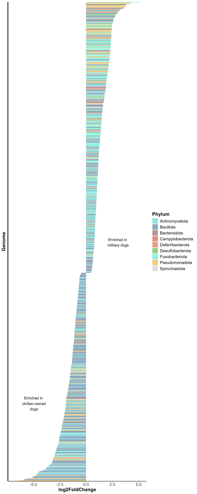
genus_matrix <- ancombc_rand_table_mag%>%
mutate(taxon=factor(taxon,levels=ancombc_rand_table_mag$taxon)) %>%
filter(!is.na(phylum))
genus_matrix <- genus_matrix %>%
arrange(desc(-lfc_dog_groupmilitary)) %>%
slice_head(n = 30) %>%
bind_rows(genus_matrix %>%
arrange(-lfc_dog_groupmilitary) %>%
slice_head(n = 30))
tax_table <- as.data.frame(unique(genus_matrix$phylum))
colnames(tax_table)[1] <- "phylum"
tax_color <- merge(tax_table, colors_alphabetic, by = "phylum") %>%
dplyr::arrange(phylum) %>%
dplyr::select(colors) %>%
pull()
genus_matrix %>%
ggplot(., aes(x=lfc_dog_groupmilitary, y=forcats::fct_reorder(genome,lfc_dog_groupmilitary), fill=phylum)) +
geom_col() +
scale_fill_manual(values=tax_color) +
geom_hline(yintercept=0) +
geom_text(aes(4.3, 35), label = "Enriched in\n military dogs", color="#666666") +
geom_text(aes(-5.6, 20), label = "Enriched in\n civilian-owned\n dogs", color="#666666") +
theme(panel.background = element_blank(),
axis.line = element_line(size = 0.5, linetype = "solid", colour = "black"),
axis.text.x = element_text(size = 12),
axis.text.y = element_text(size = 8),
axis.title = element_text(size = 14, face = "bold"),
legend.text = element_text(size = 12),
legend.title = element_text(size = 14, face = "bold"),
legend.position = "right", legend.box = "vertical")+
xlab("log2FoldChange") +
ylab("Genome")+
guides(fill=guide_legend(title="Phylum")) 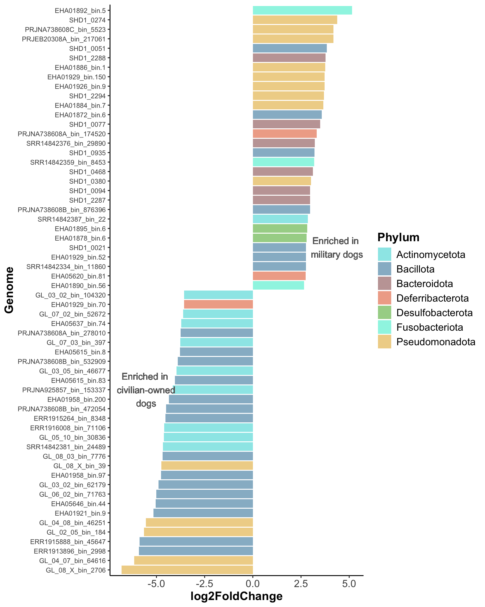
Military dogs
ancombc_rand_table_mag %>%
filter(lfc_dog_groupmilitary>0) %>%
arrange(desc(species)) %>%
select(species) %>%
nrow %>%
cat()504ancombc_rand_table_mag %>%
filter(lfc_dog_groupmilitary>0) %>%
group_by(phylum) %>%
summarise(count=n()) %>%
arrange(-count) %>%
tt()| phylum | count |
|---|---|
| Bacillota | 141 |
| Fusobacteriota | 130 |
| Actinomycetota | 84 |
| Pseudomonadota | 70 |
| Bacteroidota | 62 |
| Campylobacterota | 7 |
| Desulfobacterota | 4 |
| Spirochaetota | 4 |
| Deferribacterota | 2 |
ancombc_rand_table_mag %>%
filter(lfc_dog_groupmilitary>0) %>%
group_by(phylum, family, genus) %>%
summarise(count=n()) %>%
arrange(-count)%>%
tt()`summarise()` has grouped output by 'phylum', 'family'. You can override using the `.groups` argument.| phylum | family | genus | count |
|---|---|---|---|
| Actinomycetota | Coriobacteriaceae | Collinsella | 81 |
| Fusobacteriota | Fusobacteriaceae | Fusobacterium_B | 80 |
| Fusobacteriota | Fusobacteriaceae | Fusobacterium_A | 49 |
| Pseudomonadota | Succinivibrionaceae | Anaerobiospirillum | 42 |
| Bacteroidota | Bacteroidaceae | Phocaeicola | 20 |
| Bacteroidota | Bacteroidaceae | Prevotella | 13 |
| Bacillota | Ruminococcaceae | Faecalibacterium | 10 |
| Bacteroidota | Bacteroidaceae | Bacteroides | 9 |
| Bacillota | CAG-508 | CAG-269 | 8 |
| Bacillota | Oscillospiraceae | Faecousia | 7 |
| Bacillota | Ruminococcaceae | Fournierella | 7 |
| Bacillota | Oscillospiraceae | Lawsonibacter | 6 |
| Pseudomonadota | Burkholderiaceae | Sutterella | 6 |
| Bacillota | Acidaminococcaceae | Phascolarctobacterium_A | 5 |
| Bacillota | Butyricicoccaceae | Butyricicoccus | 5 |
| Bacillota | Peptostreptococcaceae | Peptacetobacter | 5 |
| Bacillota | Turicibacteraceae | Turicibacter | 5 |
| Bacillota | Erysipelotrichaceae | Holdemanella | 4 |
| Bacillota | Selenomonadaceae | Megamonas | 4 |
| Pseudomonadota | Burkholderiaceae | Aphodousia | 4 |
| Pseudomonadota | Succinivibrionaceae | Succinivibrio | 4 |
| Bacillota | Anaeroplasmataceae | CALUXS01 | 3 |
| Bacillota | Anaerotignaceae | Anaerotignum | 3 |
| Bacillota | Erysipelotrichaceae | 3 | |
| Bacillota | Lachnospiraceae | Otoolea | 3 |
| Bacillota | Lachnospiraceae | UMGS1370 | 3 |
| Desulfobacterota | Desulfovibrionaceae | Taurinivorans | 3 |
| Pseudomonadota | Succinivibrionaceae | Anaerobiospirillum_A | 3 |
| Spirochaetota | Brachyspiraceae | Brachyspira | 3 |
| Bacillota | Clostridiaceae | Clostridium | 2 |
| Bacillota | Clostridiaceae | Dwaynesavagella | 2 |
| Bacillota | Coprobacillaceae | Catenibacterium | 2 |
| Bacillota | Coprobacillaceae | Faecalibacillus | 2 |
| Bacillota | Coprobacillaceae | Thomasclavelia | 2 |
| Bacillota | Erysipelotrichaceae | Allobaculum | 2 |
| Bacillota | Lachnospiraceae | Enterocloster | 2 |
| Bacillota | Lachnospiraceae | Faecalimonas | 2 |
| Bacillota | Lachnospiraceae | Roseburia | 2 |
| Bacillota | Mycoplasmoidaceae | Mycoplasmoides | 2 |
| Bacillota | Oscillospiraceae | Pseudoflavonifractor_A | 2 |
| Bacillota | Ruminococcaceae | Avimicrobium | 2 |
| Bacteroidota | Bacteroidaceae | Alloprevotella | 2 |
| Bacteroidota | Flavobacteriaceae | Capnocytophaga | 2 |
| Bacteroidota | Muribaculaceae | Limisoma | 2 |
| Bacteroidota | Paludibacteraceae | RF16 | 2 |
| Campylobacterota | Campylobacteraceae | Campylobacter_D | 2 |
| Campylobacterota | Helicobacteraceae | Helicobacter_A | 2 |
| Deferribacterota | Mucispirillaceae | Mucispirillum | 2 |
| Pseudomonadota | Burkholderiaceae | Duodenibacillus | 2 |
| Pseudomonadota | Pasteurellaceae | Frederiksenia | 2 |
| Pseudomonadota | Pasteurellaceae | Pasteurella | 2 |
| Actinomycetota | Atopobiaceae | Granulimonas | 1 |
| Actinomycetota | Bifidobacteriaceae | Bifidobacterium | 1 |
| Actinomycetota | Eggerthellaceae | Adlercreutzia | 1 |
| Bacillota | Acidaminococcaceae | URXU01 | 1 |
| Bacillota | Acutalibacteraceae | Eubacterium_R | 1 |
| Bacillota | Acutalibacteraceae | UMGS1071 | 1 |
| Bacillota | Anaerotignaceae | 1 | |
| Bacillota | Anaerotignaceae | JANFXS01 | 1 |
| Bacillota | CAG-274 | Gallispira | 1 |
| Bacillota | CAG-508 | Merdicola | 1 |
| Bacillota | CAG-826 | Onthovivens | 1 |
| Bacillota | Coprobacillaceae | Fimiplasma | 1 |
| Bacillota | Coprobacillaceae | UBA3379 | 1 |
| Bacillota | Dialisteraceae | Allisonella | 1 |
| Bacillota | Dialisteraceae | Dialister | 1 |
| Bacillota | Erysipelotrichaceae | Amedibacillus | 1 |
| Bacillota | Erysipelotrichaceae | Amedibacterium | 1 |
| Bacillota | Erysipelotrichaceae | CALVGN01 | 1 |
| Bacillota | Erysipelotrichaceae | Clostridium_AQ | 1 |
| Bacillota | Lachnospiraceae | 1 | |
| Bacillota | Lachnospiraceae | Agathobacter | 1 |
| Bacillota | Lachnospiraceae | Blautia_A | 1 |
| Bacillota | Lachnospiraceae | Brotaphodocola | 1 |
| Bacillota | Lachnospiraceae | CAJMNU01 | 1 |
| Bacillota | Lachnospiraceae | Gallintestinimicrobium | 1 |
| Bacillota | Lachnospiraceae | KM106-2 | 1 |
| Bacillota | Lachnospiraceae | Lachnospira | 1 |
| Bacillota | Lachnospiraceae | Laedolimicola | 1 |
| Bacillota | Lachnospiraceae | Ruminococcus_B | 1 |
| Bacillota | Lactobacillaceae | Leuconostoc | 1 |
| Bacillota | Lactobacillaceae | Ligilactobacillus | 1 |
| Bacillota | Lactobacillaceae | Limosilactobacillus | 1 |
| Bacillota | Megasphaeraceae | Megasphaera | 1 |
| Bacillota | Oscillospiraceae | Flavonifractor | 1 |
| Bacillota | Oscillospiraceae | Intestinimonas | 1 |
| Bacillota | Peptostreptococcaceae | Faecalimicrobium | 1 |
| Bacillota | Ruminococcaceae | Gemmiger | 1 |
| Bacillota | Selenomonadaceae | Anaerovibrio | 1 |
| Bacillota | Veillonellaceae | Veillonella_A | 1 |
| Bacteroidota | Bacteroidaceae | OM05-12 | 1 |
| Bacteroidota | Bacteroidaceae | Paraprevotella | 1 |
| Bacteroidota | Bacteroidaceae | Phocaeicola_A | 1 |
| Bacteroidota | Bacteroidaceae | UBA1189 | 1 |
| Bacteroidota | Barnesiellaceae | Barnesiella | 1 |
| Bacteroidota | Flavobacteriaceae | Aquaticitalea | 1 |
| Bacteroidota | Muribaculaceae | Muribaculum | 1 |
| Bacteroidota | Paludibacteraceae | Aphodosoma | 1 |
| Bacteroidota | Porphyromonadaceae | Porphyromonas_A | 1 |
| Bacteroidota | Tannerellaceae | Parabacteroides | 1 |
| Bacteroidota | UBA932 | Cryptobacteroides | 1 |
| Bacteroidota | Weeksellaceae | Bergeyella | 1 |
| Campylobacterota | Helicobacteraceae | Helicobacter_B | 1 |
| Campylobacterota | Helicobacteraceae | Helicobacter_C | 1 |
| Campylobacterota | Helicobacteraceae | Helicobacter_D | 1 |
| Desulfobacterota | Desulfovibrionaceae | Bilophila | 1 |
| Fusobacteriota | Fusobacteriaceae | Cetobacterium_A | 1 |
| Pseudomonadota | Burkholderiaceae | Parasutterella | 1 |
| Pseudomonadota | Cardiobacteriaceae | JAUMXB01 | 1 |
| Pseudomonadota | Enterobacteriaceae | Citrobacter | 1 |
| Pseudomonadota | Neisseriaceae | Eikenella | 1 |
| Pseudomonadota | Wohlfahrtiimonadaceae | Ignatzschineria | 1 |
| Spirochaetota | Treponemataceae | Treponema_D | 1 |
ancombc_rand_table_mag %>%
filter(lfc_dog_groupmilitary>0) %>%
group_by(phylum, family, genus, species) %>%
summarise(count=n()) %>%
arrange(-count) %>%
tt()`summarise()` has grouped output by 'phylum', 'family', 'genus'. You can override using the `.groups` argument.| phylum | family | genus | species | count |
|---|---|---|---|---|
| Actinomycetota | Coriobacteriaceae | Collinsella | Collinsella intestinalis | 78 |
| Fusobacteriota | Fusobacteriaceae | Fusobacterium_B | Fusobacterium_B sp900554885 | 40 |
| Fusobacteriota | Fusobacteriaceae | Fusobacterium_B | Fusobacterium_B sp900541465 | 35 |
| Fusobacteriota | Fusobacteriaceae | Fusobacterium_A | Fusobacterium_A sp900555845 | 27 |
| Pseudomonadota | Succinivibrionaceae | Anaerobiospirillum | Anaerobiospirillum succiniciproducens | 21 |
| Fusobacteriota | Fusobacteriaceae | Fusobacterium_A | Fusobacterium_A sp900543175 | 16 |
| Pseudomonadota | Succinivibrionaceae | Anaerobiospirillum | Anaerobiospirillum sp900543125 | 13 |
| Bacillota | CAG-508 | CAG-269 | 6 | |
| Bacillota | Oscillospiraceae | Faecousia | 6 | |
| Bacteroidota | Bacteroidaceae | Phocaeicola | 6 | |
| Bacteroidota | Bacteroidaceae | Phocaeicola | Phocaeicola plebeius_A | 5 |
| Pseudomonadota | Succinivibrionaceae | Anaerobiospirillum | 5 | |
| Bacillota | Peptostreptococcaceae | Peptacetobacter | Peptacetobacter sp900550335 | 4 |
| Bacillota | Selenomonadaceae | Megamonas | Megamonas funiformis | 4 |
| Fusobacteriota | Fusobacteriaceae | Fusobacterium_A | Fusobacterium_A varium_C | 4 |
| Bacillota | Anaeroplasmataceae | CALUXS01 | 3 | |
| Bacillota | Erysipelotrichaceae | 3 | ||
| Bacillota | Oscillospiraceae | Lawsonibacter | Lawsonibacter sp900066825 | 3 |
| Bacillota | Ruminococcaceae | Faecalibacterium | Faecalibacterium sp900540455 | 3 |
| Bacillota | Ruminococcaceae | Fournierella | 3 | |
| Bacillota | Ruminococcaceae | Fournierella | Fournierella massiliensis | 3 |
| Bacteroidota | Bacteroidaceae | Prevotella | Prevotella copri_B | 3 |
| Desulfobacterota | Desulfovibrionaceae | Taurinivorans | 3 | |
| Pseudomonadota | Burkholderiaceae | Aphodousia | Aphodousia sp937906995 | 3 |
| Pseudomonadota | Burkholderiaceae | Sutterella | 3 | |
| Pseudomonadota | Succinivibrionaceae | Anaerobiospirillum | Anaerobiospirillum sp023051105 | 3 |
| Bacillota | Anaerotignaceae | Anaerotignum | 2 | |
| Bacillota | CAG-508 | CAG-269 | CAG-269 sp900553985 | 2 |
| Bacillota | Coprobacillaceae | Catenibacterium | Catenibacterium faecis | 2 |
| Bacillota | Coprobacillaceae | Faecalibacillus | Faecalibacillus intestinalis | 2 |
| Bacillota | Erysipelotrichaceae | Holdemanella | Holdemanella sp900556915 | 2 |
| Bacillota | Lachnospiraceae | Faecalimonas | 2 | |
| Bacillota | Lachnospiraceae | Otoolea | Otoolea fessa | 2 |
| Bacillota | Lachnospiraceae | UMGS1370 | 2 | |
| Bacillota | Mycoplasmoidaceae | Mycoplasmoides | 2 | |
| Bacillota | Oscillospiraceae | Lawsonibacter | Lawsonibacter sp900764755 | 2 |
| Bacillota | Ruminococcaceae | Avimicrobium | Avimicrobium sp934845495 | 2 |
| Bacillota | Ruminococcaceae | Faecalibacterium | Faecalibacterium sp937880095 | 2 |
| Bacillota | Turicibacteraceae | Turicibacter | 2 | |
| Bacteroidota | Bacteroidaceae | Bacteroides | Bacteroides sp937890825 | 2 |
| Bacteroidota | Bacteroidaceae | Bacteroides | Bacteroides stercoris | 2 |
| Bacteroidota | Bacteroidaceae | Phocaeicola | Phocaeicola sp900546645 | 2 |
| Bacteroidota | Bacteroidaceae | Prevotella | Prevotella copri_C | 2 |
| Bacteroidota | Flavobacteriaceae | Capnocytophaga | Capnocytophaga cynodegmi | 2 |
| Bacteroidota | Muribaculaceae | Limisoma | 2 | |
| Bacteroidota | Paludibacteraceae | RF16 | 2 | |
| Campylobacterota | Helicobacteraceae | Helicobacter_A | Helicobacter_A rappini | 2 |
| Deferribacterota | Mucispirillaceae | Mucispirillum | Mucispirillum sp937890655 | 2 |
| Fusobacteriota | Fusobacteriaceae | Fusobacterium_B | Fusobacterium_B sp900545035 | 2 |
| Pseudomonadota | Burkholderiaceae | Duodenibacillus | 2 | |
| Pseudomonadota | Pasteurellaceae | Frederiksenia | Frederiksenia canicola | 2 |
| Pseudomonadota | Succinivibrionaceae | Anaerobiospirillum_A | 2 | |
| Spirochaetota | Brachyspiraceae | Brachyspira | 2 | |
| Actinomycetota | Atopobiaceae | Granulimonas | 1 | |
| Actinomycetota | Bifidobacteriaceae | Bifidobacterium | Bifidobacterium sp002742445 | 1 |
| Actinomycetota | Coriobacteriaceae | Collinsella | Collinsella sp003479805 | 1 |
| Actinomycetota | Coriobacteriaceae | Collinsella | Collinsella sp902362275 | 1 |
| Actinomycetota | Coriobacteriaceae | Collinsella | Collinsella stercoris | 1 |
| Actinomycetota | Eggerthellaceae | Adlercreutzia | Adlercreutzia equolifaciens | 1 |
| Bacillota | Acidaminococcaceae | Phascolarctobacterium_A | Phascolarctobacterium_A sp900544885 | 1 |
| Bacillota | Acidaminococcaceae | Phascolarctobacterium_A | Phascolarctobacterium_A sp900547415 | 1 |
| Bacillota | Acidaminococcaceae | Phascolarctobacterium_A | Phascolarctobacterium_A sp900552855 | 1 |
| Bacillota | Acidaminococcaceae | Phascolarctobacterium_A | Phascolarctobacterium_A succinatutens | 1 |
| Bacillota | Acidaminococcaceae | Phascolarctobacterium_A | Phascolarctobacterium_A succinatutens_A | 1 |
| Bacillota | Acidaminococcaceae | URXU01 | URXU01 sp900541915 | 1 |
| Bacillota | Acutalibacteraceae | Eubacterium_R | Eubacterium_R sp900542875 | 1 |
| Bacillota | Acutalibacteraceae | UMGS1071 | 1 | |
| Bacillota | Anaerotignaceae | 1 | ||
| Bacillota | Anaerotignaceae | Anaerotignum | Anaerotignum sp905214825 | 1 |
| Bacillota | Anaerotignaceae | JANFXS01 | JANFXS01 sp024460105 | 1 |
| Bacillota | Butyricicoccaceae | Butyricicoccus | 1 | |
| Bacillota | Butyricicoccaceae | Butyricicoccus | Butyricicoccus pullicaecorum_A | 1 |
| Bacillota | Butyricicoccaceae | Butyricicoccus | Butyricicoccus pullicaecorum_B | 1 |
| Bacillota | Butyricicoccaceae | Butyricicoccus | Butyricicoccus pullicaecorum_C | 1 |
| Bacillota | Butyricicoccaceae | Butyricicoccus | Butyricicoccus sp018383195 | 1 |
| Bacillota | CAG-274 | Gallispira | Gallispira sp900543365 | 1 |
| Bacillota | CAG-508 | Merdicola | Merdicola sp900754085 | 1 |
| Bacillota | CAG-826 | Onthovivens | 1 | |
| Bacillota | Clostridiaceae | Clostridium | 1 | |
| Bacillota | Clostridiaceae | Clostridium | Clostridium sp026168755 | 1 |
| Bacillota | Clostridiaceae | Dwaynesavagella | 1 | |
| Bacillota | Clostridiaceae | Dwaynesavagella | Dwaynesavagella gallinarum | 1 |
| Bacillota | Coprobacillaceae | Fimiplasma | 1 | |
| Bacillota | Coprobacillaceae | Thomasclavelia | Thomasclavelia spiroformis | 1 |
| Bacillota | Coprobacillaceae | Thomasclavelia | Thomasclavelia spiroformis_A | 1 |
| Bacillota | Coprobacillaceae | UBA3379 | 1 | |
| Bacillota | Dialisteraceae | Allisonella | Allisonella histaminiformans | 1 |
| Bacillota | Dialisteraceae | Dialister | Dialister sp900543165 | 1 |
| Bacillota | Erysipelotrichaceae | Allobaculum | 1 | |
| Bacillota | Erysipelotrichaceae | Allobaculum | Allobaculum stercoricanis | 1 |
| Bacillota | Erysipelotrichaceae | Amedibacillus | Amedibacillus dolichus | 1 |
| Bacillota | Erysipelotrichaceae | Amedibacterium | Amedibacterium intestinale | 1 |
| Bacillota | Erysipelotrichaceae | CALVGN01 | CALVGN01 sp937900565 | 1 |
| Bacillota | Erysipelotrichaceae | Clostridium_AQ | Clostridium_AQ sp000165065 | 1 |
| Bacillota | Erysipelotrichaceae | Holdemanella | 1 | |
| Bacillota | Erysipelotrichaceae | Holdemanella | Holdemanella hominis | 1 |
| Bacillota | Lachnospiraceae | 1 | ||
| Bacillota | Lachnospiraceae | Agathobacter | Agathobacter rectalis | 1 |
| Bacillota | Lachnospiraceae | Blautia_A | Blautia_A wexlerae | 1 |
| Bacillota | Lachnospiraceae | Brotaphodocola | Brotaphodocola sp900538475 | 1 |
| Bacillota | Lachnospiraceae | CAJMNU01 | CAJMNU01 sp905214855 | 1 |
| Bacillota | Lachnospiraceae | Enterocloster | 1 | |
| Bacillota | Lachnospiraceae | Enterocloster | Enterocloster sp001517625 | 1 |
| Bacillota | Lachnospiraceae | Gallintestinimicrobium | Gallintestinimicrobium sp900539715 | 1 |
| Bacillota | Lachnospiraceae | KM106-2 | 1 | |
| Bacillota | Lachnospiraceae | Lachnospira | Lachnospira sp900552795 | 1 |
| Bacillota | Lachnospiraceae | Laedolimicola | 1 | |
| Bacillota | Lachnospiraceae | Otoolea | Otoolea sp027698105 | 1 |
| Bacillota | Lachnospiraceae | Roseburia | Roseburia sp019421345 | 1 |
| Bacillota | Lachnospiraceae | Roseburia | Roseburia sp026168605 | 1 |
| Bacillota | Lachnospiraceae | Ruminococcus_B | Ruminococcus_B gnavus | 1 |
| Bacillota | Lachnospiraceae | UMGS1370 | UMGS1370 sp900542035 | 1 |
| Bacillota | Lactobacillaceae | Leuconostoc | Leuconostoc lactis_A | 1 |
| Bacillota | Lactobacillaceae | Ligilactobacillus | Ligilactobacillus sp900765635 | 1 |
| Bacillota | Lactobacillaceae | Limosilactobacillus | Limosilactobacillus ingluviei | 1 |
| Bacillota | Megasphaeraceae | Megasphaera | Megasphaera elsdenii | 1 |
| Bacillota | Oscillospiraceae | Faecousia | Faecousia sp937890525 | 1 |
| Bacillota | Oscillospiraceae | Flavonifractor | Flavonifractor plautii | 1 |
| Bacillota | Oscillospiraceae | Intestinimonas | Intestinimonas sp026169115 | 1 |
| Bacillota | Oscillospiraceae | Lawsonibacter | Lawsonibacter sp902363045 | 1 |
| Bacillota | Oscillospiraceae | Pseudoflavonifractor_A | 1 | |
| Bacillota | Oscillospiraceae | Pseudoflavonifractor_A | Pseudoflavonifractor_A sp018374635 | 1 |
| Bacillota | Peptostreptococcaceae | Faecalimicrobium | Faecalimicrobium sp937907205 | 1 |
| Bacillota | Peptostreptococcaceae | Peptacetobacter | Peptacetobacter hiranonis | 1 |
| Bacillota | Ruminococcaceae | Faecalibacterium | 1 | |
| Bacillota | Ruminococcaceae | Faecalibacterium | Faecalibacterium duncaniae | 1 |
| Bacillota | Ruminococcaceae | Faecalibacterium | Faecalibacterium longum | 1 |
| Bacillota | Ruminococcaceae | Faecalibacterium | Faecalibacterium prausnitzii_J | 1 |
| Bacillota | Ruminococcaceae | Faecalibacterium | Faecalibacterium sp900539885 | 1 |
| Bacillota | Ruminococcaceae | Fournierella | Fournierella sp002160145 | 1 |
| Bacillota | Ruminococcaceae | Gemmiger | Gemmiger sp900539695 | 1 |
| Bacillota | Selenomonadaceae | Anaerovibrio | Anaerovibrio sp900548165 | 1 |
| Bacillota | Turicibacteraceae | Turicibacter | Turicibacter bilis | 1 |
| Bacillota | Turicibacteraceae | Turicibacter | Turicibacter sp002311155 | 1 |
| Bacillota | Turicibacteraceae | Turicibacter | Turicibacter sp030531025 | 1 |
| Bacillota | Veillonellaceae | Veillonella_A | Veillonella_A magna | 1 |
| Bacteroidota | Bacteroidaceae | Alloprevotella | 1 | |
| Bacteroidota | Bacteroidaceae | Alloprevotella | Alloprevotella sp004557035 | 1 |
| Bacteroidota | Bacteroidaceae | Bacteroides | Bacteroides hominis | 1 |
| Bacteroidota | Bacteroidaceae | Bacteroides | Bacteroides ovatus | 1 |
| Bacteroidota | Bacteroidaceae | Bacteroides | Bacteroides sp900766005 | 1 |
| Bacteroidota | Bacteroidaceae | Bacteroides | Bacteroides thetaiotaomicron | 1 |
| Bacteroidota | Bacteroidaceae | Bacteroides | Bacteroides uniformis | 1 |
| Bacteroidota | Bacteroidaceae | OM05-12 | 1 | |
| Bacteroidota | Bacteroidaceae | Paraprevotella | Paraprevotella clara | 1 |
| Bacteroidota | Bacteroidaceae | Phocaeicola | Phocaeicola coprocola | 1 |
| Bacteroidota | Bacteroidaceae | Phocaeicola | Phocaeicola coprophilus | 1 |
| Bacteroidota | Bacteroidaceae | Phocaeicola | Phocaeicola faecicola | 1 |
| Bacteroidota | Bacteroidaceae | Phocaeicola | Phocaeicola massiliensis | 1 |
| Bacteroidota | Bacteroidaceae | Phocaeicola | Phocaeicola plebeius | 1 |
| Bacteroidota | Bacteroidaceae | Phocaeicola | Phocaeicola sp900542985 | 1 |
| Bacteroidota | Bacteroidaceae | Phocaeicola | Phocaeicola sp900556845 | 1 |
| Bacteroidota | Bacteroidaceae | Phocaeicola_A | 1 | |
| Bacteroidota | Bacteroidaceae | Prevotella | Prevotella copri_A | 1 |
| Bacteroidota | Bacteroidaceae | Prevotella | Prevotella hominis | 1 |
| Bacteroidota | Bacteroidaceae | Prevotella | Prevotella sp004554665 | 1 |
| Bacteroidota | Bacteroidaceae | Prevotella | Prevotella sp015074785 | 1 |
| Bacteroidota | Bacteroidaceae | Prevotella | Prevotella sp900543975 | 1 |
| Bacteroidota | Bacteroidaceae | Prevotella | Prevotella sp900544825 | 1 |
| Bacteroidota | Bacteroidaceae | Prevotella | Prevotella sp900767615 | 1 |
| Bacteroidota | Bacteroidaceae | Prevotella | Prevotella sp945787895 | 1 |
| Bacteroidota | Bacteroidaceae | UBA1189 | 1 | |
| Bacteroidota | Barnesiellaceae | Barnesiella | Barnesiella intestinihominis | 1 |
| Bacteroidota | Flavobacteriaceae | Aquaticitalea | 1 | |
| Bacteroidota | Muribaculaceae | Muribaculum | Muribaculum gordoncarteri | 1 |
| Bacteroidota | Paludibacteraceae | Aphodosoma | 1 | |
| Bacteroidota | Porphyromonadaceae | Porphyromonas_A | Porphyromonas_A cangingivalis | 1 |
| Bacteroidota | Tannerellaceae | Parabacteroides | 1 | |
| Bacteroidota | UBA932 | Cryptobacteroides | Cryptobacteroides sp000435075 | 1 |
| Bacteroidota | Weeksellaceae | Bergeyella | Bergeyella zoohelcum | 1 |
| Campylobacterota | Campylobacteraceae | Campylobacter_D | Campylobacter_D concheus | 1 |
| Campylobacterota | Campylobacteraceae | Campylobacter_D | Campylobacter_D jejuni | 1 |
| Campylobacterota | Helicobacteraceae | Helicobacter_B | Helicobacter_B sp937906905 | 1 |
| Campylobacterota | Helicobacteraceae | Helicobacter_C | 1 | |
| Campylobacterota | Helicobacteraceae | Helicobacter_D | Helicobacter_D winghamensis | 1 |
| Desulfobacterota | Desulfovibrionaceae | Bilophila | Bilophila wadsworthia | 1 |
| Fusobacteriota | Fusobacteriaceae | Cetobacterium_A | 1 | |
| Fusobacteriota | Fusobacteriaceae | Fusobacterium_A | 1 | |
| Fusobacteriota | Fusobacteriaceae | Fusobacterium_A | Fusobacterium_A mortiferum | 1 |
| Fusobacteriota | Fusobacteriaceae | Fusobacterium_B | 1 | |
| Fusobacteriota | Fusobacteriaceae | Fusobacterium_B | Fusobacterium_B sp019416865 | 1 |
| Fusobacteriota | Fusobacteriaceae | Fusobacterium_B | Fusobacterium_B sp900554355 | 1 |
| Pseudomonadota | Burkholderiaceae | Aphodousia | Aphodousia faecalis | 1 |
| Pseudomonadota | Burkholderiaceae | Parasutterella | Parasutterella gallistercoris | 1 |
| Pseudomonadota | Burkholderiaceae | Sutterella | Sutterella sp900754475 | 1 |
| Pseudomonadota | Burkholderiaceae | Sutterella | Sutterella sp905186105 | 1 |
| Pseudomonadota | Burkholderiaceae | Sutterella | Sutterella wadsworthensis_A | 1 |
| Pseudomonadota | Cardiobacteriaceae | JAUMXB01 | 1 | |
| Pseudomonadota | Enterobacteriaceae | Citrobacter | Citrobacter portucalensis | 1 |
| Pseudomonadota | Neisseriaceae | Eikenella | Eikenella shayeganii | 1 |
| Pseudomonadota | Pasteurellaceae | Pasteurella | Pasteurella canis | 1 |
| Pseudomonadota | Pasteurellaceae | Pasteurella | Pasteurella dagmatis | 1 |
| Pseudomonadota | Succinivibrionaceae | Anaerobiospirillum_A | Anaerobiospirillum_A thomasii | 1 |
| Pseudomonadota | Succinivibrionaceae | Succinivibrio | 1 | |
| Pseudomonadota | Succinivibrionaceae | Succinivibrio | Succinivibrio sp000431835 | 1 |
| Pseudomonadota | Succinivibrionaceae | Succinivibrio | Succinivibrio sp019420905 | 1 |
| Pseudomonadota | Succinivibrionaceae | Succinivibrio | Succinivibrio sp905186145 | 1 |
| Pseudomonadota | Wohlfahrtiimonadaceae | Ignatzschineria | 1 | |
| Spirochaetota | Brachyspiraceae | Brachyspira | Brachyspira sp029258575 | 1 |
| Spirochaetota | Treponemataceae | Treponema_D | Treponema_D sp900770075 | 1 |
Civilian-owned dogs
ancombc_rand_table_mag %>%
filter(lfc_dog_groupmilitary<0) %>%
arrange(desc(species)) %>%
select(species) %>%
nrow()[1] 388ancombc_rand_table_mag %>%
filter(lfc_dog_groupmilitary<0) %>%
group_by(phylum) %>%
summarise(count=n()) %>%
arrange(-count)%>%
tt()| phylum | count |
|---|---|
| Bacillota | 209 |
| Actinomycetota | 92 |
| Pseudomonadota | 50 |
| Bacteroidota | 32 |
| Campylobacterota | 3 |
| Deferribacterota | 1 |
| Fusobacteriota | 1 |
ancombc_rand_table_mag %>%
filter(lfc_dog_groupmilitary<0) %>%
group_by(phylum, family, genus) %>%
summarise(count=n()) %>%
arrange(-count)%>%
tt()`summarise()` has grouped output by 'phylum', 'family'. You can override using the `.groups` argument.| phylum | family | genus | count |
|---|---|---|---|
| Actinomycetota | Coriobacteriaceae | Collinsella | 52 |
| Bacillota | Oscillospiraceae | Faecousia | 26 |
| Actinomycetota | Bifidobacteriaceae | Bifidobacterium | 12 |
| Bacillota | Clostridiaceae | Clostridium | 12 |
| Pseudomonadota | Enterobacteriaceae | Escherichia | 10 |
| Bacillota | Lactobacillaceae | Lactobacillus | 9 |
| Bacillota | Lactobacillaceae | Ligilactobacillus | 9 |
| Bacillota | Lactobacillaceae | Limosilactobacillus | 8 |
| Bacillota | Lachnospiraceae | Blautia_A | 6 |
| Bacillota | Ruminococcaceae | Negativibacillus | 6 |
| Pseudomonadota | Burkholderiaceae | Ralstonia | 6 |
| Bacillota | Lachnospiraceae | Schaedlerella | 5 |
| Bacillota | Peptostreptococcaceae | Peptacetobacter | 5 |
| Actinomycetota | Eggerthellaceae | Slackia | 4 |
| Bacillota | Enterococcaceae | Enterococcus_B | 4 |
| Bacillota | Lactobacillaceae | Leuconostoc | 4 |
| Pseudomonadota | Pseudomonadaceae | Pseudomonas_E | 4 |
| Actinomycetota | Eggerthellaceae | CALADF01 | 3 |
| Bacillota | Anaerovoracaceae | Gallibacter | 3 |
| Bacillota | Erysipelotrichaceae | Allobaculum | 3 |
| Bacillota | Lachnospiraceae | Blautia | 3 |
| Bacillota | Selenomonadaceae | Megamonas | 3 |
| Bacteroidota | Bacteroidaceae | Bacteroides | 3 |
| Bacteroidota | Bacteroidaceae | Paraprevotella | 3 |
| Bacteroidota | Flavobacteriaceae | Flavobacterium | 3 |
| Bacteroidota | UBA932 | Cryptobacteroides | 3 |
| Campylobacterota | Helicobacteraceae | Helicobacter_G | 3 |
| Actinomycetota | Atopobiaceae | Granulimonas | 2 |
| Actinomycetota | Micrococcaceae | Glutamicibacter | 2 |
| Actinomycetota | Micrococcaceae | Rothia | 2 |
| Bacillota | Aristaeellaceae | Ventricola | 2 |
| Bacillota | Clostridiaceae | Sarcina | 2 |
| Bacillota | Coprobacillaceae | Fimiplasma | 2 |
| Bacillota | Erysipelotrichaceae | Dubosiella | 2 |
| Bacillota | Erysipelotrichaceae | Faecalibaculum | 2 |
| Bacillota | Eubacteriaceae | Eubacterium | 2 |
| Bacillota | Lachnospiraceae | Anaerostipes | 2 |
| Bacillota | Lachnospiraceae | Marvinbryantia | 2 |
| Bacillota | Lachnospiraceae | Mediterraneibacter | 2 |
| Bacillota | Lachnospiraceae | Otoolea | 2 |
| Bacillota | Peptostreptococcaceae | Paraclostridium | 2 |
| Bacillota | Ruminococcaceae | Anaerofilum | 2 |
| Bacillota | Ruminococcaceae | RGIG3102 | 2 |
| Bacillota | Streptococcaceae | Lactococcus | 2 |
| Bacillota | Streptococcaceae | Streptococcus | 2 |
| Bacteroidota | Bacteroidaceae | Phocaeicola | 2 |
| Bacteroidota | Muribaculaceae | Limisoma | 2 |
| Bacteroidota | Sphingobacteriaceae | Albibacterium | 2 |
| Pseudomonadota | Burkholderiaceae | Comamonas | 2 |
| Pseudomonadota | Burkholderiaceae | Giesbergeria | 2 |
| Pseudomonadota | Caulobacteraceae | Brevundimonas | 2 |
| Pseudomonadota | Cellvibrionaceae | Cellvibrio | 2 |
| Pseudomonadota | Enterobacteriaceae | Citrobacter | 2 |
| Pseudomonadota | Enterobacteriaceae | Enterobacter | 2 |
| Pseudomonadota | Moraxellaceae | Psychrobacter | 2 |
| Pseudomonadota | Rhodanobacteraceae | Dokdonella | 2 |
| Actinomycetota | Cellulomonadaceae | Sanguibacter | 1 |
| Actinomycetota | Dermatophilaceae | Knoellia | 1 |
| Actinomycetota | Dermatophilaceae | Terracoccus | 1 |
| Actinomycetota | Eggerthellaceae | Adlercreutzia | 1 |
| Actinomycetota | Eggerthellaceae | Eggerthella | 1 |
| Actinomycetota | Micrococcaceae | Arthrobacter_B | 1 |
| Actinomycetota | Micrococcaceae | Paeniglutamicibacter | 1 |
| Actinomycetota | Mycobacteriaceae | Corynebacterium | 1 |
| Actinomycetota | Mycobacteriaceae | Dietzia | 1 |
| Actinomycetota | Mycobacteriaceae | Rhodococcus | 1 |
| Actinomycetota | Nocardioidaceae | Nocardioides | 1 |
| Actinomycetota | Propionibacteriaceae | Arachnia | 1 |
| Actinomycetota | Propionibacteriaceae | Cutibacterium | 1 |
| Actinomycetota | Streptomycetaceae | Streptomyces | 1 |
| Actinomycetota | UBA10799 | JADKAV01 | 1 |
| Bacillota | Acidaminococcaceae | Phascolarctobacterium_A | 1 |
| Bacillota | Acutalibacteraceae | Eubacterium_R | 1 |
| Bacillota | Acutalibacteraceae | Scybalenecus | 1 |
| Bacillota | Acutalibacteraceae | UBA737 | 1 |
| Bacillota | Acutalibacteraceae | UMGS1071 | 1 |
| Bacillota | Anaerotignaceae | Metalachnospira | 1 |
| Bacillota | Aristaeellaceae | Egerieenecus | 1 |
| Bacillota | Borkfalkiaceae | Borkfalkia | 1 |
| Bacillota | Borkfalkiaceae | Coproplasma | 1 |
| Bacillota | Butyricicoccaceae | Butyricicoccus | 1 |
| Bacillota | Butyricicoccaceae | Pseudobutyricicoccus | 1 |
| Bacillota | CAG-465 | 1 | |
| Bacillota | CAG-826 | Onthovivens | 1 |
| Bacillota | Cellulosilyticaceae | Cellulosilyticum | 1 |
| Bacillota | Cellulosilyticaceae | Zhenhengia | 1 |
| Bacillota | Clostridiaceae | Clostridium_AH | 1 |
| Bacillota | Clostridiaceae | Clostridium_G | 1 |
| Bacillota | Clostridiaceae | Clostridium_H | 1 |
| Bacillota | Clostridiaceae | Clostridium_J | 1 |
| Bacillota | Clostridiaceae | Clostridium_X | 1 |
| Bacillota | Clostridiaceae | Hathewaya | 1 |
| Bacillota | Coprobacillaceae | CALDMQ01 | 1 |
| Bacillota | DSM-1321 | Bacillus_AD | 1 |
| Bacillota | Dialisteraceae | Allisonella | 1 |
| Bacillota | Enterococcaceae | Enterococcus | 1 |
| Bacillota | Enterococcaceae | Enterococcus_D | 1 |
| Bacillota | Erysipelotrichaceae | 1 | |
| Bacillota | Erysipelotrichaceae | CALVGN01 | 1 |
| Bacillota | Erysipelotrichaceae | Faecalitalea | 1 |
| Bacillota | Erysipelotrichaceae | Holdemanella | 1 |
| Bacillota | Erysipelotrichaceae | JAHHTG01 | 1 |
| Bacillota | Erysipelotrichaceae | Longicatena | 1 |
| Bacillota | JAAYXM01 | RGIG7332 | 1 |
| Bacillota | Lachnospiraceae | Acetatifactor | 1 |
| Bacillota | Lachnospiraceae | Avilachnospira | 1 |
| Bacillota | Lachnospiraceae | Choladousia | 1 |
| Bacillota | Lachnospiraceae | Coprococcus_A | 1 |
| Bacillota | Lachnospiraceae | Dorea_B | 1 |
| Bacillota | Lachnospiraceae | Dorea_D | 1 |
| Bacillota | Lachnospiraceae | Faecalimonas | 1 |
| Bacillota | Lachnospiraceae | JAHHTM01 | 1 |
| Bacillota | Lachnospiraceae | Oliverpabstia | 1 |
| Bacillota | Lachnospiraceae | Roseburia | 1 |
| Bacillota | Lachnospiraceae | Ruminococcus_B | 1 |
| Bacillota | Lachnospiraceae | SFDP01 | 1 |
| Bacillota | Lachnospiraceae | Scybalocola | 1 |
| Bacillota | Lachnospiraceae | UBA2868 | 1 |
| Bacillota | Lactobacillaceae | Lactiplantibacillus | 1 |
| Bacillota | Lactobacillaceae | Latilactobacillus | 1 |
| Bacillota | Lactobacillaceae | Levilactobacillus | 1 |
| Bacillota | Lactobacillaceae | Weissella | 1 |
| Bacillota | Megasphaeraceae | Megasphaera | 1 |
| Bacillota | Mycoplasmoidaceae | Malacoplasma | 1 |
| Bacillota | Mycoplasmoidaceae | Mycoplasma_L | 1 |
| Bacillota | Oscillospiraceae | Dysosmobacter | 1 |
| Bacillota | Oscillospiraceae | Evtepia | 1 |
| Bacillota | Oscillospiraceae | HGM13010 | 1 |
| Bacillota | Oscillospiraceae | Lawsonibacter | 1 |
| Bacillota | Oscillospiraceae | Pelethomonas | 1 |
| Bacillota | Oscillospiraceae | Pseudoscilispira | 1 |
| Bacillota | Paenibacillaceae | Paenibacillus | 1 |
| Bacillota | Peptococcaceae | UMGS1590 | 1 |
| Bacillota | Peptoniphilaceae | Anaerosphaera | 1 |
| Bacillota | Peptostreptococcaceae | Clostridioides | 1 |
| Bacillota | Peptostreptococcaceae | Peptostreptococcus | 1 |
| Bacillota | Planococcaceae | Kurthia | 1 |
| Bacillota | Planococcaceae | Sporosarcina | 1 |
| Bacillota | Ruminococcaceae | Merdimmobilis | 1 |
| Bacillota | Ruminococcaceae | Merdivicinus | 1 |
| Bacillota | Ruminococcaceae | UBA866 | 1 |
| Bacillota | Streptococcaceae | Lactococcus_A | 1 |
| Bacillota | Vagococcaceae | Vagococcus | 1 |
| Bacillota | Veillonellaceae | Veillonella_A | 1 |
| Bacteroidota | Bacteroidaceae | Alloprevotella | 1 |
| Bacteroidota | Bacteroidaceae | UBA4372 | 1 |
| Bacteroidota | Chitinophagaceae | Hanamia | 1 |
| Bacteroidota | Cryomorphaceae | Cryomorpha | 1 |
| Bacteroidota | Cyclobacteriaceae | 1 | |
| Bacteroidota | Flavobacteriaceae | Lutibacter | 1 |
| Bacteroidota | Marinifilaceae | Odoribacter | 1 |
| Bacteroidota | Paludibacteraceae | Aphodosoma | 1 |
| Bacteroidota | Prolixibacteraceae | Draconibacterium | 1 |
| Bacteroidota | Sphingobacteriaceae | 1 | |
| Bacteroidota | Sphingobacteriaceae | Sphingobacterium | 1 |
| Bacteroidota | Tannerellaceae | Parabacteroides | 1 |
| Bacteroidota | Weeksellaceae | Chryseobacterium | 1 |
| Bacteroidota | Weeksellaceae | Halpernia | 1 |
| Deferribacterota | Mucispirillaceae | 1 | |
| Fusobacteriota | Fusobacteriaceae | Fusobacterium_A | 1 |
| Pseudomonadota | Beijerinckiaceae | Rhodoblastus | 1 |
| Pseudomonadota | Burkholderiaceae | Herminiimonas | 1 |
| Pseudomonadota | Burkholderiaceae | Paracidovorax | 1 |
| Pseudomonadota | Burkholderiaceae | Parasutterella | 1 |
| Pseudomonadota | Burkholderiaceae | Rhodoferax | 1 |
| Pseudomonadota | Burkholderiaceae | Zeimonas | 1 |
| Pseudomonadota | Enterobacteriaceae | Klebsiella | 1 |
| Pseudomonadota | Enterobacteriaceae | Moellerella | 1 |
| Pseudomonadota | Enterobacteriaceae | Proteus | 1 |
| Pseudomonadota | Methylophilaceae | JABFRO01 | 1 |
| Pseudomonadota | Moraxellaceae | Acinetobacter | 1 |
| Pseudomonadota | Rhodanobacteraceae | Dyella_A | 1 |
| Pseudomonadota | Rhodanobacteraceae | Rhodanobacter | 1 |
| Pseudomonadota | Xanthomonadaceae | Lysobacter_C | 1 |
ancombc_rand_table_mag %>%
filter(lfc_dog_groupmilitary<0) %>%
group_by(phylum, family, genus, species) %>%
summarise(count=n()) %>%
arrange(-count)%>%
tt()`summarise()` has grouped output by 'phylum', 'family', 'genus'. You can override using the `.groups` argument.| phylum | family | genus | species | count |
|---|---|---|---|---|
| Bacillota | Oscillospiraceae | Faecousia | Faecousia sp937890525 | 16 |
| Actinomycetota | Coriobacteriaceae | Collinsella | Collinsella sp902470815 | 12 |
| Actinomycetota | Coriobacteriaceae | Collinsella | Collinsella sp902364775 | 10 |
| Bacillota | Oscillospiraceae | Faecousia | 10 | |
| Pseudomonadota | Enterobacteriaceae | Escherichia | Escherichia coli | 9 |
| Actinomycetota | Coriobacteriaceae | Collinsella | 8 | |
| Pseudomonadota | Burkholderiaceae | Ralstonia | Ralstonia mannitolilytica | 6 |
| Actinomycetota | Bifidobacteriaceae | Bifidobacterium | Bifidobacterium globosum | 4 |
| Actinomycetota | Coriobacteriaceae | Collinsella | Collinsella sp900555585 | 4 |
| Actinomycetota | Coriobacteriaceae | Collinsella | Collinsella tanakaei | 4 |
| Bacillota | Lactobacillaceae | Ligilactobacillus | Ligilactobacillus salivarius | 4 |
| Actinomycetota | Coriobacteriaceae | Collinsella | Collinsella intestinalis | 3 |
| Actinomycetota | Coriobacteriaceae | Collinsella | Collinsella sp008014645 | 3 |
| Actinomycetota | Coriobacteriaceae | Collinsella | Collinsella sp900551665 | 3 |
| Bacillota | Lachnospiraceae | Schaedlerella | 3 | |
| Bacillota | Peptostreptococcaceae | Peptacetobacter | Peptacetobacter hiranonis | 3 |
| Bacillota | Ruminococcaceae | Negativibacillus | Negativibacillus sp000435195 | 3 |
| Bacillota | Selenomonadaceae | Megamonas | 3 | |
| Bacteroidota | Bacteroidaceae | Paraprevotella | 3 | |
| Campylobacterota | Helicobacteraceae | Helicobacter_G | 3 | |
| Actinomycetota | Atopobiaceae | Granulimonas | 2 | |
| Actinomycetota | Bifidobacteriaceae | Bifidobacterium | Bifidobacterium animalis_B | 2 |
| Actinomycetota | Coriobacteriaceae | Collinsella | Collinsella phocaeensis | 2 |
| Actinomycetota | Coriobacteriaceae | Collinsella | Collinsella stercoris | 2 |
| Actinomycetota | Eggerthellaceae | CALADF01 | 2 | |
| Actinomycetota | Eggerthellaceae | Slackia | Slackia piriformis | 2 |
| Bacillota | Anaerovoracaceae | Gallibacter | Gallibacter sp937900695 | 2 |
| Bacillota | Aristaeellaceae | Ventricola | 2 | |
| Bacillota | Clostridiaceae | Clostridium | 2 | |
| Bacillota | Coprobacillaceae | Fimiplasma | 2 | |
| Bacillota | Enterococcaceae | Enterococcus_B | Enterococcus_B lactis | 2 |
| Bacillota | Erysipelotrichaceae | Faecalibaculum | Faecalibaculum rodentium | 2 |
| Bacillota | Eubacteriaceae | Eubacterium | 2 | |
| Bacillota | Lachnospiraceae | Blautia | 2 | |
| Bacillota | Lachnospiraceae | Blautia_A | 2 | |
| Bacillota | Lachnospiraceae | Marvinbryantia | Marvinbryantia sp937915375 | 2 |
| Bacillota | Lachnospiraceae | Otoolea | 2 | |
| Bacillota | Lachnospiraceae | Schaedlerella | Schaedlerella sp900765975 | 2 |
| Bacillota | Lactobacillaceae | Lactobacillus | 2 | |
| Bacillota | Lactobacillaceae | Lactobacillus | Lactobacillus acidophilus | 2 |
| Bacillota | Lactobacillaceae | Lactobacillus | Lactobacillus johnsonii | 2 |
| Bacillota | Lactobacillaceae | Leuconostoc | Leuconostoc lactis | 2 |
| Bacillota | Lactobacillaceae | Ligilactobacillus | Ligilactobacillus agilis | 2 |
| Bacillota | Lactobacillaceae | Limosilactobacillus | Limosilactobacillus mucosae | 2 |
| Bacillota | Lactobacillaceae | Limosilactobacillus | Limosilactobacillus reuteri | 2 |
| Bacillota | Peptostreptococcaceae | Peptacetobacter | Peptacetobacter sp900550335 | 2 |
| Bacillota | Ruminococcaceae | Anaerofilum | 2 | |
| Bacillota | Ruminococcaceae | RGIG3102 | 2 | |
| Bacteroidota | Flavobacteriaceae | Flavobacterium | 2 | |
| Bacteroidota | Sphingobacteriaceae | Albibacterium | 2 | |
| Bacteroidota | UBA932 | Cryptobacteroides | 2 | |
| Pseudomonadota | Burkholderiaceae | Comamonas | 2 | |
| Pseudomonadota | Burkholderiaceae | Giesbergeria | 2 | |
| Pseudomonadota | Caulobacteraceae | Brevundimonas | 2 | |
| Pseudomonadota | Cellvibrionaceae | Cellvibrio | 2 | |
| Pseudomonadota | Rhodanobacteraceae | Dokdonella | 2 | |
| Actinomycetota | Bifidobacteriaceae | Bifidobacterium | 1 | |
| Actinomycetota | Bifidobacteriaceae | Bifidobacterium | Bifidobacterium bifidum | 1 |
| Actinomycetota | Bifidobacteriaceae | Bifidobacterium | Bifidobacterium criceti | 1 |
| Actinomycetota | Bifidobacteriaceae | Bifidobacterium | Bifidobacterium infantis | 1 |
| Actinomycetota | Bifidobacteriaceae | Bifidobacterium | Bifidobacterium longum | 1 |
| Actinomycetota | Bifidobacteriaceae | Bifidobacterium | Bifidobacterium pseudolongum | 1 |
| Actinomycetota | Cellulomonadaceae | Sanguibacter | Sanguibacter suarezii | 1 |
| Actinomycetota | Coriobacteriaceae | Collinsella | Collinsella sp003479805 | 1 |
| Actinomycetota | Dermatophilaceae | Knoellia | 1 | |
| Actinomycetota | Dermatophilaceae | Terracoccus | 1 | |
| Actinomycetota | Eggerthellaceae | Adlercreutzia | Adlercreutzia rubneri | 1 |
| Actinomycetota | Eggerthellaceae | CALADF01 | CALADF01 sp937890835 | 1 |
| Actinomycetota | Eggerthellaceae | Eggerthella | Eggerthella lenta | 1 |
| Actinomycetota | Eggerthellaceae | Slackia | Slackia sp029266945 | 1 |
| Actinomycetota | Eggerthellaceae | Slackia | Slackia sp959608125 | 1 |
| Actinomycetota | Micrococcaceae | Arthrobacter_B | 1 | |
| Actinomycetota | Micrococcaceae | Glutamicibacter | Glutamicibacter protophormiae | 1 |
| Actinomycetota | Micrococcaceae | Glutamicibacter | Glutamicibacter soli | 1 |
| Actinomycetota | Micrococcaceae | Paeniglutamicibacter | Paeniglutamicibacter gangotriensis | 1 |
| Actinomycetota | Micrococcaceae | Rothia | Rothia kristinae | 1 |
| Actinomycetota | Micrococcaceae | Rothia | Rothia sp030064065 | 1 |
| Actinomycetota | Mycobacteriaceae | Corynebacterium | 1 | |
| Actinomycetota | Mycobacteriaceae | Dietzia | 1 | |
| Actinomycetota | Mycobacteriaceae | Rhodococcus | Rhodococcus sp002091985 | 1 |
| Actinomycetota | Nocardioidaceae | Nocardioides | 1 | |
| Actinomycetota | Propionibacteriaceae | Arachnia | 1 | |
| Actinomycetota | Propionibacteriaceae | Cutibacterium | Cutibacterium acnes | 1 |
| Actinomycetota | Streptomycetaceae | Streptomyces | Streptomyces diastaticus | 1 |
| Actinomycetota | UBA10799 | JADKAV01 | 1 | |
| Bacillota | Acidaminococcaceae | Phascolarctobacterium_A | Phascolarctobacterium_A succinatutens_B | 1 |
| Bacillota | Acutalibacteraceae | Eubacterium_R | 1 | |
| Bacillota | Acutalibacteraceae | Scybalenecus | Scybalenecus sp900540085 | 1 |
| Bacillota | Acutalibacteraceae | UBA737 | 1 | |
| Bacillota | Acutalibacteraceae | UMGS1071 | UMGS1071 sp900541905 | 1 |
| Bacillota | Anaerotignaceae | Metalachnospira | Metalachnospira sp900548595 | 1 |
| Bacillota | Anaerovoracaceae | Gallibacter | 1 | |
| Bacillota | Aristaeellaceae | Egerieenecus | 1 | |
| Bacillota | Borkfalkiaceae | Borkfalkia | 1 | |
| Bacillota | Borkfalkiaceae | Coproplasma | 1 | |
| Bacillota | Butyricicoccaceae | Butyricicoccus | Butyricicoccus sp018383195 | 1 |
| Bacillota | Butyricicoccaceae | Pseudobutyricicoccus | 1 | |
| Bacillota | CAG-465 | 1 | ||
| Bacillota | CAG-826 | Onthovivens | 1 | |
| Bacillota | Cellulosilyticaceae | Cellulosilyticum | 1 | |
| Bacillota | Cellulosilyticaceae | Zhenhengia | Zhenhengia yiwuensis | 1 |
| Bacillota | Clostridiaceae | Clostridium | Clostridium baratii | 1 |
| Bacillota | Clostridiaceae | Clostridium | Clostridium cuniculi | 1 |
| Bacillota | Clostridiaceae | Clostridium | Clostridium disporicum_B | 1 |
| Bacillota | Clostridiaceae | Clostridium | Clostridium hominis | 1 |
| Bacillota | Clostridiaceae | Clostridium | Clostridium moniliforme | 1 |
| Bacillota | Clostridiaceae | Clostridium | Clostridium paraputrificum | 1 |
| Bacillota | Clostridiaceae | Clostridium | Clostridium sp018372555 | 1 |
| Bacillota | Clostridiaceae | Clostridium | Clostridium sp030532265 | 1 |
| Bacillota | Clostridiaceae | Clostridium | Clostridium sp900766315 | 1 |
| Bacillota | Clostridiaceae | Clostridium | Clostridium thermobutyricum | 1 |
| Bacillota | Clostridiaceae | Clostridium_AH | Clostridium_AH fallax | 1 |
| Bacillota | Clostridiaceae | Clostridium_G | 1 | |
| Bacillota | Clostridiaceae | Clostridium_H | Clostridium_H novyi | 1 |
| Bacillota | Clostridiaceae | Clostridium_J | 1 | |
| Bacillota | Clostridiaceae | Clostridium_X | Clostridium_X cadaveris | 1 |
| Bacillota | Clostridiaceae | Hathewaya | 1 | |
| Bacillota | Clostridiaceae | Sarcina | 1 | |
| Bacillota | Clostridiaceae | Sarcina | Sarcina perfringens | 1 |
| Bacillota | Coprobacillaceae | CALDMQ01 | 1 | |
| Bacillota | DSM-1321 | Bacillus_AD | 1 | |
| Bacillota | Dialisteraceae | Allisonella | Allisonella histaminiformans | 1 |
| Bacillota | Enterococcaceae | Enterococcus | Enterococcus faecalis | 1 |
| Bacillota | Enterococcaceae | Enterococcus_B | Enterococcus_B faecium | 1 |
| Bacillota | Enterococcaceae | Enterococcus_B | Enterococcus_B hirae | 1 |
| Bacillota | Enterococcaceae | Enterococcus_D | Enterococcus_D gallinarum | 1 |
| Bacillota | Erysipelotrichaceae | 1 | ||
| Bacillota | Erysipelotrichaceae | Allobaculum | 1 | |
| Bacillota | Erysipelotrichaceae | Allobaculum | Allobaculum fili | 1 |
| Bacillota | Erysipelotrichaceae | Allobaculum | Allobaculum stercoricanis | 1 |
| Bacillota | Erysipelotrichaceae | CALVGN01 | 1 | |
| Bacillota | Erysipelotrichaceae | Dubosiella | Dubosiella newyorkensis | 1 |
| Bacillota | Erysipelotrichaceae | Dubosiella | Dubosiella sp910585105 | 1 |
| Bacillota | Erysipelotrichaceae | Faecalitalea | 1 | |
| Bacillota | Erysipelotrichaceae | Holdemanella | 1 | |
| Bacillota | Erysipelotrichaceae | JAHHTG01 | 1 | |
| Bacillota | Erysipelotrichaceae | Longicatena | 1 | |
| Bacillota | JAAYXM01 | RGIG7332 | 1 | |
| Bacillota | Lachnospiraceae | Acetatifactor | 1 | |
| Bacillota | Lachnospiraceae | Anaerostipes | Anaerostipes caccae | 1 |
| Bacillota | Lachnospiraceae | Anaerostipes | Anaerostipes hadrus | 1 |
| Bacillota | Lachnospiraceae | Avilachnospira | 1 | |
| Bacillota | Lachnospiraceae | Blautia | Blautia sp900556555 | 1 |
| Bacillota | Lachnospiraceae | Blautia_A | Blautia_A fusiformis | 1 |
| Bacillota | Lachnospiraceae | Blautia_A | Blautia_A sp026169535 | 1 |
| Bacillota | Lachnospiraceae | Blautia_A | Blautia_A sp030536995 | 1 |
| Bacillota | Lachnospiraceae | Blautia_A | Blautia_A sp900541345 | 1 |
| Bacillota | Lachnospiraceae | Choladousia | Choladousia sp900757145 | 1 |
| Bacillota | Lachnospiraceae | Coprococcus_A | Coprococcus_A catus | 1 |
| Bacillota | Lachnospiraceae | Dorea_B | 1 | |
| Bacillota | Lachnospiraceae | Dorea_D | Dorea_D sp900543415 | 1 |
| Bacillota | Lachnospiraceae | Faecalimonas | 1 | |
| Bacillota | Lachnospiraceae | JAHHTM01 | 1 | |
| Bacillota | Lachnospiraceae | Mediterraneibacter | 1 | |
| Bacillota | Lachnospiraceae | Mediterraneibacter | Mediterraneibacter lactaris | 1 |
| Bacillota | Lachnospiraceae | Oliverpabstia | 1 | |
| Bacillota | Lachnospiraceae | Roseburia | 1 | |
| Bacillota | Lachnospiraceae | Ruminococcus_B | 1 | |
| Bacillota | Lachnospiraceae | SFDP01 | SFDP01 sp017555455 | 1 |
| Bacillota | Lachnospiraceae | Scybalocola | Scybalocola sp902489925 | 1 |
| Bacillota | Lachnospiraceae | UBA2868 | 1 | |
| Bacillota | Lactobacillaceae | Lactiplantibacillus | Lactiplantibacillus plantarum | 1 |
| Bacillota | Lactobacillaceae | Lactobacillus | Lactobacillus amylovorus | 1 |
| Bacillota | Lactobacillaceae | Lactobacillus | Lactobacillus crispatus | 1 |
| Bacillota | Lactobacillaceae | Lactobacillus | Lactobacillus johnsonii_A | 1 |
| Bacillota | Lactobacillaceae | Latilactobacillus | Latilactobacillus sakei | 1 |
| Bacillota | Lactobacillaceae | Leuconostoc | Leuconostoc citreum | 1 |
| Bacillota | Lactobacillaceae | Leuconostoc | Leuconostoc mesenteroides | 1 |
| Bacillota | Lactobacillaceae | Levilactobacillus | Levilactobacillus brevis | 1 |
| Bacillota | Lactobacillaceae | Ligilactobacillus | Ligilactobacillus animalis | 1 |
| Bacillota | Lactobacillaceae | Ligilactobacillus | Ligilactobacillus ruminis | 1 |
| Bacillota | Lactobacillaceae | Ligilactobacillus | Ligilactobacillus saerimneri | 1 |
| Bacillota | Lactobacillaceae | Limosilactobacillus | Limosilactobacillus fermentum | 1 |
| Bacillota | Lactobacillaceae | Limosilactobacillus | Limosilactobacillus reuteri_E | 1 |
| Bacillota | Lactobacillaceae | Limosilactobacillus | Limosilactobacillus reuteri_H | 1 |
| Bacillota | Lactobacillaceae | Limosilactobacillus | Limosilactobacillus vaginalis | 1 |
| Bacillota | Lactobacillaceae | Weissella | Weissella cibaria | 1 |
| Bacillota | Megasphaeraceae | Megasphaera | Megasphaera sp000417505 | 1 |
| Bacillota | Mycoplasmoidaceae | Malacoplasma | 1 | |
| Bacillota | Mycoplasmoidaceae | Mycoplasma_L | 1 | |
| Bacillota | Oscillospiraceae | Dysosmobacter | 1 | |
| Bacillota | Oscillospiraceae | Evtepia | Evtepia sp934597725 | 1 |
| Bacillota | Oscillospiraceae | HGM13010 | HGM13010 sp900754965 | 1 |
| Bacillota | Oscillospiraceae | Lawsonibacter | Lawsonibacter sp900754605 | 1 |
| Bacillota | Oscillospiraceae | Pelethomonas | 1 | |
| Bacillota | Oscillospiraceae | Pseudoscilispira | 1 | |
| Bacillota | Paenibacillaceae | Paenibacillus | 1 | |
| Bacillota | Peptococcaceae | UMGS1590 | 1 | |
| Bacillota | Peptoniphilaceae | Anaerosphaera | 1 | |
| Bacillota | Peptostreptococcaceae | Clostridioides | Clostridioides difficile | 1 |
| Bacillota | Peptostreptococcaceae | Paraclostridium | Paraclostridium dentum | 1 |
| Bacillota | Peptostreptococcaceae | Paraclostridium | Paraclostridium sordellii | 1 |
| Bacillota | Peptostreptococcaceae | Peptostreptococcus | Peptostreptococcus russellii_A | 1 |
| Bacillota | Planococcaceae | Kurthia | Kurthia intestinigallinarum | 1 |
| Bacillota | Planococcaceae | Sporosarcina | Sporosarcina sp029257435 | 1 |
| Bacillota | Ruminococcaceae | Merdimmobilis | Merdimmobilis hominis | 1 |
| Bacillota | Ruminococcaceae | Merdivicinus | 1 | |
| Bacillota | Ruminococcaceae | Negativibacillus | 1 | |
| Bacillota | Ruminococcaceae | Negativibacillus | Negativibacillus sp902490335 | 1 |
| Bacillota | Ruminococcaceae | Negativibacillus | Negativibacillus sp905197685 | 1 |
| Bacillota | Ruminococcaceae | UBA866 | 1 | |
| Bacillota | Streptococcaceae | Lactococcus | Lactococcus cremoris | 1 |
| Bacillota | Streptococcaceae | Lactococcus | Lactococcus lactis | 1 |
| Bacillota | Streptococcaceae | Lactococcus_A | Lactococcus_A raffinolactis | 1 |
| Bacillota | Streptococcaceae | Streptococcus | Streptococcus faecavium | 1 |
| Bacillota | Streptococcaceae | Streptococcus | Streptococcus thermophilus | 1 |
| Bacillota | Vagococcaceae | Vagococcus | 1 | |
| Bacillota | Veillonellaceae | Veillonella_A | 1 | |
| Bacteroidota | Bacteroidaceae | Alloprevotella | Alloprevotella sp937906495 | 1 |
| Bacteroidota | Bacteroidaceae | Bacteroides | Bacteroides caccae | 1 |
| Bacteroidota | Bacteroidaceae | Bacteroides | Bacteroides finegoldii | 1 |
| Bacteroidota | Bacteroidaceae | Bacteroides | Bacteroides ovatus | 1 |
| Bacteroidota | Bacteroidaceae | Phocaeicola | 1 | |
| Bacteroidota | Bacteroidaceae | Phocaeicola | Phocaeicola sp959599425 | 1 |
| Bacteroidota | Bacteroidaceae | UBA4372 | UBA4372 sp900766785 | 1 |
| Bacteroidota | Chitinophagaceae | Hanamia | 1 | |
| Bacteroidota | Cryomorphaceae | Cryomorpha | 1 | |
| Bacteroidota | Cyclobacteriaceae | 1 | ||
| Bacteroidota | Flavobacteriaceae | Flavobacterium | Flavobacterium macacae | 1 |
| Bacteroidota | Flavobacteriaceae | Lutibacter | 1 | |
| Bacteroidota | Marinifilaceae | Odoribacter | Odoribacter sp945900015 | 1 |
| Bacteroidota | Muribaculaceae | Limisoma | Limisoma sp900541935 | 1 |
| Bacteroidota | Muribaculaceae | Limisoma | Limisoma sp900556245 | 1 |
| Bacteroidota | Paludibacteraceae | Aphodosoma | Aphodosoma sp900769035 | 1 |
| Bacteroidota | Prolixibacteraceae | Draconibacterium | 1 | |
| Bacteroidota | Sphingobacteriaceae | 1 | ||
| Bacteroidota | Sphingobacteriaceae | Sphingobacterium | Sphingobacterium kitahiroshimense | 1 |
| Bacteroidota | Tannerellaceae | Parabacteroides | Parabacteroides merdae | 1 |
| Bacteroidota | UBA932 | Cryptobacteroides | Cryptobacteroides sp937890845 | 1 |
| Bacteroidota | Weeksellaceae | Chryseobacterium | Chryseobacterium balustinum | 1 |
| Bacteroidota | Weeksellaceae | Halpernia | 1 | |
| Deferribacterota | Mucispirillaceae | 1 | ||
| Fusobacteriota | Fusobacteriaceae | Fusobacterium_A | Fusobacterium_A hominis | 1 |
| Pseudomonadota | Beijerinckiaceae | Rhodoblastus | 1 | |
| Pseudomonadota | Burkholderiaceae | Herminiimonas | 1 | |
| Pseudomonadota | Burkholderiaceae | Paracidovorax | 1 | |
| Pseudomonadota | Burkholderiaceae | Parasutterella | Parasutterella excrementihominis | 1 |
| Pseudomonadota | Burkholderiaceae | Rhodoferax | 1 | |
| Pseudomonadota | Burkholderiaceae | Zeimonas | 1 | |
| Pseudomonadota | Enterobacteriaceae | Citrobacter | Citrobacter freundii | 1 |
| Pseudomonadota | Enterobacteriaceae | Citrobacter | Citrobacter portucalensis | 1 |
| Pseudomonadota | Enterobacteriaceae | Enterobacter | Enterobacter hormaechei_B | 1 |
| Pseudomonadota | Enterobacteriaceae | Enterobacter | Enterobacter roggenkampii | 1 |
| Pseudomonadota | Enterobacteriaceae | Escherichia | Escherichia marmotae | 1 |
| Pseudomonadota | Enterobacteriaceae | Klebsiella | Klebsiella pneumoniae | 1 |
| Pseudomonadota | Enterobacteriaceae | Moellerella | Moellerella wisconsensis | 1 |
| Pseudomonadota | Enterobacteriaceae | Proteus | Proteus mirabilis | 1 |
| Pseudomonadota | Methylophilaceae | JABFRO01 | 1 | |
| Pseudomonadota | Moraxellaceae | Acinetobacter | Acinetobacter harbinensis | 1 |
| Pseudomonadota | Moraxellaceae | Psychrobacter | 1 | |
| Pseudomonadota | Moraxellaceae | Psychrobacter | Psychrobacter maritimus | 1 |
| Pseudomonadota | Pseudomonadaceae | Pseudomonas_E | Pseudomonas_E capsici | 1 |
| Pseudomonadota | Pseudomonadaceae | Pseudomonas_E | Pseudomonas_E lundensis | 1 |
| Pseudomonadota | Pseudomonadaceae | Pseudomonas_E | Pseudomonas_E putida_H | 1 |
| Pseudomonadota | Pseudomonadaceae | Pseudomonas_E | Pseudomonas_E taetrolens | 1 |
| Pseudomonadota | Rhodanobacteraceae | Dyella_A | 1 | |
| Pseudomonadota | Rhodanobacteraceae | Rhodanobacter | 1 | |
| Pseudomonadota | Xanthomonadaceae | Lysobacter_C | Lysobacter_C ciconiae | 1 |
10.5.3 Species level
genome_tax <- genome_metadata %>%
mutate(
class = if_else(is.na(class), paste0(phylum, "_Unclassified"), class),
order = if_else(is.na(order), if_else(
str_detect(class, "Unclassified"),
class,
paste0(class, "_Unclassified")
), order),
family = if_else(is.na(family), if_else(
str_detect(order, "Unclassified"),
order,
paste0(order, "_Unclassified")
), family),
genus = if_else(genus == "", if_else(
str_detect(family, "Unclassified"),
family,
paste0(family, "_Unclassified")
), genus),
species = if_else(species == "", if_else(
str_detect(genus, "Unclassified"),
genus,
paste0(genus, "_Unclassified")
), species)
)phylo_samples <- sample_metadata %>%
filter(country=="Greenland") %>%
column_to_rownames("sample") %>%
sample_data()
phylo_genome <- genome_counts_filt %>%
select(one_of(c("genome", rownames(phylo_samples)))) %>%
left_join(genome_tax[c(1,3,4,6,8)], by = "genome") %>%
select(-genome) %>%
group_by(phylum, class, family, species) %>%
summarise(across(where(is.numeric), \(x) sum(x, na.rm = TRUE)), .groups = "drop")%>%
as.data.frame() %>%
select(-c(phylum,class, family))%>%
column_to_rownames("species") %>%
otu_table(., taxa_are_rows = TRUE)
physeq_genome_sp <- phyloseq(phylo_genome, phylo_samples)
load(file = "data/ancombc_danenborg_greenland_sp.Rdata")ancom_rand_output_sp = ancombc2(
data = physeq_genome_sp,
assay_name = "counts",
fix_formula = "dog_group",
p_adj_method = "BH",
pseudo_sens = TRUE,
prv_cut = 0,
lib_cut = 0,
s0_perc = 0.05,
group = "dog_group",
struc_zero = TRUE,
neg_lb = FALSE,
alpha = 0.05,
n_cl = 2,
verbose = TRUE,
global = FALSE,
pairwise = FALSE,
dunnet = FALSE,
trend = FALSE,
iter_control = list(
tol = 1e-5,
max_iter = 50,
verbose = FALSE
),
em_control = list(tol = 1e-5, max_iter = 100),
mdfdr_control = list(fwer_ctrl_method = "BH", B = 100),
trend_control = NULL
)
save(ancom_rand_output_sp,
file = "data/ancombc_danenborg_greenland_sp.Rdata")ancom_rand_output_sp$res %>%
dplyr::select(taxon, lfc_dog_groupmilitary, q_dog_groupmilitary) %>%
filter(q_dog_groupmilitary < 0.05) %>%
filter(lfc_dog_groupmilitary>0) %>%
nrow()[1] 177 taxon lfc_(Intercept) lfc_dog_groupmilitary se_(Intercept) se_dog_groupmilitary W_(Intercept) W_dog_groupmilitary p_(Intercept) p_dog_groupmilitary
1 Fusobacterium_A_Unclassified -1.5595384 5.188236 0.14238026 0.7297366 -10.953333 7.109738 4.575983e-20 7.478712e-11
2 Sutterella wadsworthensis_A -1.3745276 4.435990 0.13120711 0.2849346 -10.476015 15.568451 6.333189e-19 2.547200e-31
3 Aphodousia faecalis -1.3602011 4.264201 0.21100284 0.3635563 -6.446364 11.729135 2.449005e-09 1.098738e-21
4 Prevotella sp900544825 -1.2709809 3.817399 0.24472475 0.5314593 -5.193512 7.182862 8.050062e-07 5.257971e-11
5 Succinivibrio_Unclassified -1.2540182 3.345029 0.19858376 0.6428291 -6.314808 5.203606 1.036940e-08 1.242116e-06
6 Faecalibacterium sp937880095 -1.1298913 3.339344 0.19505168 0.3602237 -5.792779 9.270196 5.076204e-08 5.806268e-16
7 Citrobacter portucalensis -1.1043935 3.225044 0.28662126 0.3561871 -3.853146 9.054352 1.835206e-04 1.943248e-15
8 Prevotella copri_A -1.0898645 3.159914 0.20933116 0.5352344 -5.206413 5.903794 7.460587e-07 2.998786e-08
9 Sutterella_Unclassified -1.0849812 3.138023 0.20335915 0.3365766 -5.335296 9.323356 4.190718e-07 4.308709e-16
10 Prevotella copri_C -1.0735693 3.086866 0.20966804 0.4850058 -5.120329 6.364597 1.091613e-06 3.197018e-09
11 Sutterella sp905186105 -1.0687937 3.065459 0.12800507 0.2650472 -8.349620 11.565706 9.608308e-14 1.273994e-21
12 Prevotella sp900767615 -1.0676247 3.021294 0.22249808 0.5463694 -4.798355 5.529765 4.410927e-06 1.748725e-07
13 URXU01 sp900541915 -1.0585888 3.019712 0.17052876 0.2952394 -6.207685 10.228014 6.916133e-09 2.593970e-18
14 Prevotella copri_B -1.0257595 2.872547 0.21159939 0.5584357 -4.847649 5.143916 3.553260e-06 9.838737e-07
15 Mucispirillum sp937890655 -1.0162728 2.820913 0.29382828 0.7243264 -3.458730 3.894533 7.444801e-04 1.598859e-04
16 Bifidobacterium sp002742445 -1.0159777 2.714347 0.16504079 0.3035991 -6.155919 8.940563 9.358918e-09 4.294440e-15
17 Taurinivorans_Unclassified -0.9803711 2.669082 0.21051931 0.5698589 -4.656918 4.683759 7.920809e-06 7.084484e-06
18 Prevotella sp015074785 -1.0554350 2.640495 0.22332541 0.5783526 -4.725996 4.565545 6.333845e-06 1.222512e-05
19 Thomasclavelia spiroformis_A -0.9737661 2.639473 0.19216698 0.3110368 -5.067291 8.486045 1.377497e-06 4.542307e-14
20 Amedibacterium intestinale -0.9722944 2.632876 0.13687011 0.5129751 -7.103775 5.132561 7.515009e-11 1.034382e-06
21 Prevotella hominis -0.9722164 2.632526 0.16255860 0.3861643 -5.980713 6.817114 2.076030e-08 3.287078e-10
22 Campylobacter_D concheus -1.2094426 2.460641 0.22376003 0.4417064 -5.405088 5.570762 2.112854e-06 1.193891e-06
23 Catenibacterium faecis -0.9320737 2.452576 0.20339687 0.4728085 -4.582537 5.187251 1.076796e-05 8.122856e-07
24 Anaerobiospirillum succiniciproducens -0.9317985 2.451342 0.17437783 0.3186195 -5.343561 7.693636 4.037424e-07 3.354249e-12
25 Phocaeicola sp900556845 -0.9305950 2.445947 0.14076292 0.4332369 -6.611081 5.645749 9.341566e-10 1.010890e-07
26 Phocaeicola faecicola -0.9199372 2.398171 0.13309971 0.3184683 -6.911640 7.530328 2.026258e-10 8.004763e-12
27 UBA1189_Unclassified -1.2835547 2.386237 0.10429162 0.3613684 -12.307362 6.603336 3.547473e-19 6.549579e-09
28 Brachyspira sp029258575 -1.0454643 2.376801 0.21733423 0.5587946 -4.810399 4.253444 5.394685e-06 4.779923e-05
29 Leuconostoc lactis_A -0.9177967 2.323994 0.16312784 0.2517621 -5.626242 9.230912 1.120419e-07 7.662625e-16
30 Anaerobiospirillum sp023051105 -0.9029282 2.321923 0.23323839 0.5433672 -3.871267 4.273213 1.717293e-04 3.730094e-05
31 CAG-269 sp900553985 -0.9111207 2.289914 0.28989968 0.5789199 -3.142883 3.955493 2.089574e-03 1.271743e-04
32 Megamonas funiformis -0.8892642 2.260671 0.17529466 0.3678970 -5.072968 6.144847 1.343718e-06 9.395393e-09
33 Parasutterella gallistercoris -1.0695544 2.252030 0.39062623 0.4916049 -2.738051 4.580976 7.210433e-03 1.227056e-05
34 Turicibacter bilis -0.9569793 2.228437 0.28028346 0.4158520 -3.414327 5.358726 8.727940e-04 4.113311e-07
35 Ignatzschineria_Unclassified -0.9329199 2.228396 0.21764763 0.3694479 -4.286378 6.031692 3.861890e-05 2.135741e-08
36 Mycoplasmoides_Unclassified -0.8818444 2.227410 0.15878685 0.2680773 -5.553636 8.308835 1.548749e-07 1.201286e-13
37 Faecalibacillus intestinalis -0.8697317 2.173112 0.21078415 0.4580688 -4.126172 4.744073 6.598228e-05 5.505199e-06
38 Phocaeicola plebeius -0.8582837 2.121793 0.14783218 0.3082285 -5.805797 6.883831 4.773667e-08 2.336876e-10
39 Anaerobiospirillum sp900543125 -0.8452024 2.063153 0.22195620 0.3703572 -3.807969 5.570711 2.163591e-04 1.431411e-07
40 Phascolarctobacterium_A succinatutens_A -0.8801005 2.031749 0.12346959 0.3371085 -7.128075 6.026989 7.175561e-11 1.741343e-08
41 Treponema_D sp900770075 -0.6613272 2.023717 0.08306972 0.2068973 -7.961110 9.781262 5.907024e-07 3.733310e-08
42 Faecalibacterium sp900539885 -0.8639866 2.013656 0.16013122 0.2848149 -5.395491 7.070049 3.296798e-07 9.677292e-11
43 Cetobacterium_A_Unclassified -0.8579501 2.009532 0.16796881 0.4710227 -5.107794 4.266317 1.184774e-06 3.888042e-05
44 Turicibacter sp002311155 -0.8425436 1.988352 0.27195699 0.4408295 -3.098077 4.510478 2.398368e-03 1.453835e-05
45 Sutterella sp900754475 -0.8255286 1.974960 0.11596183 0.2217555 -7.118969 8.906026 6.944819e-11 4.442714e-15
46 Gallispira sp900543365 -0.8186085 1.943939 0.17853521 0.3485560 -4.585138 5.577121 1.065353e-05 1.389645e-07
47 Phocaeicola coprocola -0.8173734 1.938402 0.15807142 0.3359177 -5.170912 5.770468 8.732491e-07 5.638987e-08
48 OM05-12_Unclassified -0.8144983 1.925514 0.16275154 0.3097324 -5.004551 6.216701 1.810409e-06 6.617875e-09
49 Campylobacter_D jejuni -0.8126192 1.917090 0.14803597 0.2354101 -5.489336 8.143620 2.081181e-07 2.959541e-13
50 Prevotella sp900543975 -0.8097708 1.904322 0.14121791 0.3246676 -5.734194 5.865450 6.687154e-08 3.598814e-08
51 CAJMNU01 sp905214855 -0.8051139 1.883446 0.15036108 0.3414705 -5.354537 5.515690 3.842283e-07 1.844223e-07
52 Paraprevotella clara -0.8039808 1.878366 0.16672040 0.3570242 -4.822330 5.261173 3.956788e-06 5.844971e-07
53 Frederiksenia canicola -0.8507222 1.868254 0.19030441 0.4038077 -4.470323 4.626593 2.579651e-05 1.433111e-05
54 Veillonella_A magna -0.9969933 1.856172 0.12372090 0.3002773 -8.058407 6.181526 2.898769e-12 1.768064e-08
55 Barnesiella intestinihominis -0.8319027 1.838460 0.17666424 0.3218117 -4.708948 5.712843 6.647885e-06 8.004558e-08
56 Dwaynesavagella gallinarum -0.7792461 1.767487 0.15267157 0.2561304 -5.104068 6.900729 1.172485e-06 2.142940e-10
57 Phocaeicola sp900546645 -0.7770028 1.757430 0.15154447 0.3119422 -5.127226 5.633834 1.058973e-06 1.068475e-07
58 Merdicola sp900754085 -0.8346868 1.754471 0.23144667 0.5448464 -3.606389 3.220120 4.769365e-04 1.705757e-03
59 Aphodosoma_Unclassified -1.2310315 1.744700 0.10050373 0.2262570 -12.248615 7.711141 2.657083e-12 3.500391e-08
60 Anaerobiospirillum_A_Unclassified -0.8070385 1.725428 0.15458688 0.4695590 -5.220614 3.674571 7.506433e-07 3.562922e-04
61 Anaerobiospirillum_Unclassified -0.7657989 1.707206 0.18581374 0.3571841 -4.121326 4.779625 6.721920e-05 4.740169e-06
62 Anaerotignum_Unclassified -0.7649520 1.703410 0.14304197 0.3776047 -5.347745 4.511092 3.961914e-07 1.441902e-05
63 Prevotella sp004554665 -1.2447571 1.700973 0.09088006 0.2713884 -13.696703 6.267669 3.617615e-15 4.397763e-07
64 Cryptobacteroides sp000435075 -1.0092819 1.658846 0.12962853 0.2945638 -7.785955 5.631533 9.308806e-11 4.624271e-07
65 Fusobacterium_A sp900543175 -0.7545130 1.656614 0.13144071 0.2261873 -5.740329 7.324082 6.497339e-08 2.378329e-11
66 Megasphaera elsdenii -0.7665064 1.653078 0.16872576 0.2795085 -4.542913 5.914232 1.281657e-05 2.937199e-08
q_(Intercept) q_dog_groupmilitary diff_(Intercept) diff_dog_groupmilitary passed_ss_(Intercept) passed_ss_dog_groupmilitary
1 2.896597e-17 7.065709e-10 TRUE TRUE TRUE TRUE
2 1.336303e-16 1.612377e-28 TRUE TRUE TRUE TRUE
3 7.046456e-08 9.935729e-20 TRUE TRUE TRUE TRUE
4 7.489461e-06 5.200462e-10 TRUE TRUE TRUE TRUE
5 2.524551e-07 5.105582e-06 TRUE TRUE TRUE TRUE
6 8.033093e-07 1.470147e-14 TRUE TRUE TRUE TRUE
7 6.082123e-04 4.393128e-14 TRUE TRUE TRUE TRUE
8 7.091899e-06 1.807840e-07 TRUE TRUE TRUE TRUE
9 4.278588e-06 1.136422e-14 TRUE TRUE TRUE TRUE
10 8.973912e-06 2.353154e-08 TRUE TRUE TRUE TRUE
11 1.216412e-11 1.008048e-19 TRUE TRUE TRUE TRUE
12 2.820320e-05 8.716085e-07 TRUE TRUE TRUE TRUE
13 1.824130e-07 9.122127e-17 TRUE TRUE TRUE TRUE
14 2.367594e-05 4.177040e-06 TRUE TRUE TRUE TRUE
15 2.013914e-03 4.216990e-04 TRUE TRUE TRUE TRUE
16 2.369678e-07 8.809061e-14 TRUE TRUE TRUE TRUE
17 4.710325e-05 2.547999e-05 TRUE TRUE TRUE TRUE
18 3.892547e-05 4.198521e-05 TRUE TRUE TRUE TRUE
19 1.063360e-05 8.215086e-13 TRUE TRUE TRUE TRUE
20 3.659231e-09 4.336185e-06 TRUE TRUE TRUE TRUE
21 4.141458e-07 2.774294e-09 TRUE TRUE TRUE TRUE
22 1.499633e-05 4.939432e-06 TRUE TRUE TRUE FALSE
23 6.157418e-05 3.497801e-06 TRUE TRUE TRUE TRUE
24 4.189655e-06 4.163214e-11 TRUE TRUE TRUE TRUE
25 3.285117e-08 5.332445e-07 TRUE TRUE TRUE TRUE
26 8.281546e-09 9.560406e-11 TRUE TRUE TRUE TRUE
27 1.122775e-16 4.654572e-08 TRUE TRUE FALSE FALSE
28 3.381026e-05 1.387932e-04 TRUE TRUE TRUE TRUE
29 1.541793e-06 1.865555e-14 TRUE TRUE TRUE TRUE
30 5.760489e-04 1.124357e-04 TRUE TRUE TRUE TRUE
31 4.707118e-03 3.411074e-04 TRUE TRUE TRUE TRUE
32 1.056252e-05 6.464439e-08 TRUE TRUE TRUE TRUE
33 1.352792e-02 4.198521e-05 TRUE TRUE FALSE FALSE
34 2.282970e-03 1.914504e-06 TRUE TRUE TRUE TRUE
35 1.758688e-04 1.338539e-07 TRUE TRUE TRUE TRUE
36 2.042413e-06 1.901036e-12 TRUE TRUE TRUE TRUE
37 2.754437e-04 2.026041e-05 TRUE TRUE TRUE TRUE
38 7.943830e-07 2.026360e-09 TRUE TRUE TRUE TRUE
39 7.023348e-04 7.307125e-07 TRUE TRUE TRUE TRUE
40 3.659231e-09 1.160284e-07 TRUE TRUE TRUE TRUE
41 5.820775e-06 2.167477e-07 TRUE TRUE TRUE TRUE
42 3.793499e-06 8.877863e-10 TRUE TRUE TRUE TRUE
43 9.493187e-06 1.160911e-04 TRUE TRUE TRUE TRUE
44 5.292193e-03 4.719371e-05 TRUE TRUE TRUE TRUE
45 3.659231e-09 8.809061e-14 TRUE TRUE TRUE TRUE
46 6.157418e-05 7.151589e-07 TRUE TRUE TRUE TRUE
47 7.785447e-06 3.131122e-07 TRUE TRUE TRUE TRUE
48 1.380709e-05 4.654572e-08 TRUE TRUE TRUE TRUE
49 2.584662e-06 4.460451e-12 TRUE TRUE TRUE TRUE
50 1.007850e-06 2.110862e-07 TRUE TRUE TRUE TRUE
51 4.179819e-06 9.120261e-07 TRUE TRUE TRUE TRUE
52 2.582110e-05 2.624019e-06 TRUE TRUE TRUE TRUE
53 1.218596e-04 4.700307e-05 TRUE TRUE TRUE TRUE
54 2.293651e-10 1.165817e-07 TRUE TRUE FALSE FALSE
55 4.046260e-05 4.257887e-07 TRUE TRUE TRUE TRUE
56 9.493187e-06 1.884002e-09 TRUE TRUE TRUE TRUE
57 8.820129e-06 5.589628e-07 TRUE TRUE TRUE TRUE
58 1.384866e-03 3.575311e-03 TRUE TRUE TRUE TRUE
59 2.293651e-10 2.090328e-07 TRUE TRUE FALSE FALSE
60 7.091899e-06 8.775601e-04 TRUE TRUE TRUE TRUE
61 2.781030e-04 1.765016e-05 TRUE TRUE TRUE TRUE
62 4.179819e-06 4.704764e-05 TRUE TRUE TRUE TRUE
63 5.724876e-13 2.031959e-06 TRUE TRUE FALSE FALSE
64 4.208910e-09 2.105873e-06 TRUE TRUE TRUE TRUE
65 1.003126e-06 2.570377e-10 TRUE TRUE TRUE TRUE
66 6.934091e-05 1.787737e-07 TRUE TRUE TRUE TRUE
[ reached 'max' / getOption("max.print") -- omitted 234 rows ]ancom_rand_output_sp$res %>%
dplyr::select(taxon, lfc_dog_groupmilitary, q_dog_groupmilitary) %>%
filter(lfc_dog_groupmilitary < 0.05) %>%
filter(lfc_dog_groupmilitary<0) %>%
nrow()[1] 333 taxon lfc_(Intercept) lfc_dog_groupmilitary se_(Intercept) se_dog_groupmilitary W_(Intercept) W_dog_groupmilitary p_(Intercept) p_dog_groupmilitary q_(Intercept)
1 Limosilactobacillus reuteri -0.209031126 -5.436734 0.3195555 0.3842449 -0.65413090 -14.149139 0.5144713571 5.529889e-26 0.586775440
2 Lactobacillus_Unclassified 0.147529559 -5.248836 0.3132826 0.3860730 0.47091521 -13.595452 0.6386423552 3.225582e-25 0.701841338
3 CAG-465_Unclassified -0.329870532 -4.951019 0.3663350 0.4195662 -0.90046141 -11.800328 0.3700599942 1.372957e-20 0.441144965
4 Egerieenecus_Unclassified 0.250241932 -4.817283 0.3239659 0.3855884 0.77243289 -12.493330 0.4415297274 9.119245e-23 0.511883365
5 Paracidovorax_Unclassified 0.630947392 -4.701338 0.3197760 0.3915037 1.97309149 -12.008412 0.0506741286 1.292126e-22 0.076011193
6 JAHHTG01_Unclassified 0.535268066 -4.622067 0.3194871 0.6489959 1.67539823 -7.121874 0.0963965614 7.827293e-11 0.135597830
7 Ligilactobacillus saerimneri -0.698465814 -4.466849 0.2318380 0.2987228 -3.01273205 -14.953156 0.0036342973 3.487915e-23 0.007445017
8 Merdivicinus_Unclassified -0.037350443 -4.304431 0.2955113 0.3563611 -0.12639259 -12.078846 0.8996749455 2.975352e-21 0.923549337
9 UMGS1590_Unclassified 0.468667820 -3.991629 0.2109702 0.5903075 2.22148794 -6.761948 0.0280893315 4.451816e-10 0.045128292
10 Limosilactobacillus reuteri_E -0.353396665 -3.858835 0.2492903 0.3130145 -1.41761101 -12.327975 0.1596461515 2.866926e-21 0.208793417
11 Limosilactobacillus reuteri_H -0.302748581 -3.771117 0.2816976 0.3394365 -1.07472911 -11.109934 0.2851350033 4.810319e-19 0.356700508
12 Clostridium moniliforme 0.273318607 -3.742634 0.2706730 0.4416773 1.00977436 -8.473684 0.3146184125 6.721395e-14 0.386705738
13 Bifidobacterium pseudolongum 0.341212272 -3.684015 0.3405145 0.4331970 1.00204913 -8.504248 0.3185392052 1.072186e-13 0.390766118
14 Mucispirillaceae_Unclassified 0.371357601 -3.517359 0.3590926 0.7050370 1.03415560 -4.988899 0.3030924344 2.020226e-06 0.374721701
15 CALADF01_Unclassified 0.361600885 -3.495001 0.1770943 0.3871903 2.04185530 -9.026572 0.0432366160 2.394259e-15 0.065790332
16 Bifidobacterium animalis_B -0.704818083 -3.432749 0.2898486 0.3462577 -2.43167656 -9.913856 0.0172923375 1.619592e-15 0.029583918
17 Clostridium_G_Unclassified 0.338319528 -3.391096 0.2160636 0.3213964 1.56583288 -10.551131 0.1198761084 4.485576e-19 0.162487316
18 Bifidobacterium globosum 0.089045513 -3.380898 0.3520185 0.4287926 0.25295689 -7.884695 0.8007416783 1.759991e-12 0.846192792
19 Lactobacillus amylovorus -0.708935913 -3.240937 0.2256015 0.2934211 -3.14242547 -11.045342 0.0023994620 2.167512e-17 0.005292193
20 Ralstonia mannitolilytica 0.313947345 -3.133036 0.2169069 0.3813642 1.44738300 -8.215337 0.1502344326 2.002254e-13 0.198121658
21 UBA737_Unclassified 0.215730678 -3.122165 0.1845690 0.2848980 1.16883508 -10.958890 0.2447121869 5.863031e-20 0.310426482
22 Terracoccus_Unclassified 0.059620240 -3.104669 0.2762906 0.4215577 0.21578819 -7.364754 0.8295561414 3.586719e-11 0.869730759
23 Rhodanobacter_Unclassified -0.268656568 -3.086299 0.1849005 0.2760471 -1.45297919 -11.180335 0.1496692613 9.024210e-19 0.197788398
24 Limosilactobacillus mucosae -0.084654660 -3.086288 0.2136795 0.3097698 -0.39617592 -9.963168 0.6927290041 4.000171e-17 0.752139725
25 Acinetobacter harbinensis 0.284321691 -3.000231 0.2216996 0.3003284 1.28246345 -9.989833 0.2019977688 1.002100e-17 0.261481774
26 Arachnia_Unclassified -0.187485042 -2.977930 0.2649143 0.3577123 -0.70771958 -8.324929 0.4807656294 4.523203e-13 0.551312760
27 Dietzia_Unclassified 0.195365309 -2.975066 0.1852877 0.3368454 1.05438874 -8.832141 0.2937387405 7.806613e-15 0.365297884
28 Glutamicibacter protophormiae -0.467240604 -2.905958 0.1974675 0.2720593 -2.36616428 -10.681343 0.0200713910 8.533646e-18 0.033434712
29 Dyella_A_Unclassified -0.466552348 -2.903984 0.1882018 0.2637060 -2.47900087 -11.012202 0.0149969191 1.744295e-18 0.026223894
30 Avilachnospira_Unclassified 0.233262927 -2.896032 0.2450005 0.6011892 0.95209169 -4.817172 0.3428733163 4.103430e-06 0.416581208
31 Albibacterium_Unclassified -0.136479572 -2.875510 0.2318588 0.3845080 -0.58863225 -7.478415 0.5573370754 2.109680e-11 0.627747987
32 Paenibacillus_Unclassified 0.147211534 -2.860541 0.1491054 0.2820316 0.98729866 -10.142628 0.3254188292 5.697120e-18 0.397452829
33 Slackia sp029266945 0.221418566 -2.849161 0.1540905 0.3545104 1.43693818 -8.036891 0.1531946175 5.489374e-13 0.200770586
34 Rhodococcus sp002091985 0.067149356 -2.823191 0.2701942 0.4183528 0.24852257 -6.748349 0.8041549262 5.616087e-10 0.847459706
35 Lactobacillus johnsonii_A 0.010401758 -2.766677 0.2700314 0.3677587 0.03852055 -7.523078 0.9693437643 1.686324e-11 0.978619781
36 Clostridium sp030532265 0.230092903 -2.757137 0.2532995 0.5253491 0.90838263 -5.248199 0.3653832245 6.193747e-07 0.438875866
37 Pelethomonas_Unclassified 0.021028745 -2.722779 0.2665127 0.3529975 0.07890335 -7.713310 0.9372490542 5.244726e-12 0.956327170
38 Lactobacillus acidophilus 0.179560035 -2.695531 0.3290205 0.3937167 0.54574125 -6.846371 0.5862164161 3.037374e-10 0.653570232
39 RGIG3102_Unclassified 0.214497962 -2.687228 0.1692606 0.2487893 1.26726426 -10.801220 0.2073615655 9.940198e-20 0.266247203
40 Leuconostoc mesenteroides 0.021620988 -2.686041 0.2644368 0.3344772 0.08176240 -8.030565 0.9349741836 8.175183e-13 0.956120611
41 Nocardioides_Unclassified 0.167387635 -2.592832 0.1700952 0.2908427 0.98408223 -8.914897 0.3269461435 4.453238e-15 0.397994055
42 Psychrobacter maritimus 0.062009395 -2.555482 0.2993784 0.4351721 0.20712717 -5.872348 0.8362558648 3.800788e-08 0.873514789
43 Cutibacterium acnes -0.321618200 -2.546756 0.2121618 0.2769253 -1.51591002 -9.196544 0.1326351239 4.879684e-15 0.177126653
44 Hathewaya_Unclassified -0.098390806 -2.532105 0.2418904 0.3472025 -0.40675778 -7.292877 0.6849290247 3.904892e-11 0.745228639
45 Megamonas_Unclassified 0.173431072 -2.503135 0.3198068 0.3756874 0.54229949 -6.662813 0.5885551039 7.196178e-10 0.653570232
46 Peptostreptococcus russellii_A 0.169610427 -2.486008 0.2603323 0.3388478 0.65151502 -7.336652 0.5158821367 2.226309e-11 0.587326246
47 Acetatifactor_Unclassified 0.161377527 -2.449102 0.2127032 0.4183583 0.75869816 -5.854078 0.4494279292 3.798394e-08 0.519977837
48 Limosilactobacillus fermentum -0.639457143 -2.448184 0.2247014 0.2901273 -2.84580895 -8.438311 0.0056740841 1.453327e-12 0.010983777
49 Paeniglutamicibacter gangotriensis -0.005065404 -2.432341 0.2505741 0.3828804 -0.02021520 -6.352743 0.9839050023 3.871348e-09 0.987023560
50 Lactobacillus crispatus -0.622723920 -2.430296 0.1794383 0.2620445 -3.47040735 -9.274363 0.0008819821 6.456450e-14 0.002290607
51 Sporosarcina sp029257435 -0.579455349 -2.423082 0.2518499 0.3168330 -2.30079672 -7.647822 0.0241837881 5.568722e-11 0.039252148
52 Negativibacillus sp902490335 0.086336304 -2.352857 0.2499105 0.5301954 0.34546891 -4.437717 0.7303179678 1.961423e-05 0.784874828
53 Collinsella sp008014645 0.136193125 -2.336206 0.1603029 0.4047256 0.84959873 -5.772322 0.3971344947 5.589983e-08 0.467260474
54 Cellvibrio_Unclassified 0.093085239 -2.319263 0.2418958 0.3877224 0.38481550 -5.981762 0.7010228841 2.128763e-08 0.758542710
55 Helicobacter_G_Unclassified -0.184148383 -2.284982 0.3843517 0.5003721 -0.47911424 -4.566565 0.6328084474 1.300048e-05 0.696639560
56 Flavobacterium_Unclassified 0.028453441 -2.273276 0.2011247 0.3784287 0.14147167 -6.007146 0.8877287889 1.976726e-08 0.913711095
57 Evtepia sp934597725 0.013864096 -2.272100 0.2695228 0.3944200 0.05143943 -5.760610 0.9590594950 6.411422e-08 0.971335457
58 Enterobacter hormaechei_B 0.051031638 -2.257876 0.2370231 0.4551851 0.21530241 -4.960348 0.8298852744 2.264628e-06 0.869730759
59 UBA866_Unclassified 0.086862268 -2.249550 0.2233033 0.3317279 0.38898791 -6.781311 0.6979576700 4.427764e-10 0.756519187
60 Leuconostoc lactis -0.021957574 -2.235623 0.1747273 0.2782965 -0.12566769 -8.033244 0.9002052780 7.406852e-13 0.923549337
61 Arthrobacter_B_Unclassified 0.082206180 -2.202753 0.2023155 0.3270268 0.40632658 -6.735697 0.6851865209 5.085632e-10 0.745228639
62 Enterococcus_B faecium 0.044259827 -2.187097 0.2898545 0.4951325 0.15269672 -4.417196 0.8788960516 2.217119e-05 0.909054249
63 Cryomorpha_Unclassified -0.354986235 -2.164226 0.2073352 0.2889191 -1.71213667 -7.490768 0.0902404038 4.069107e-11 0.127504856
64 Collinsella sp900555585 0.095617709 -2.154317 0.1652654 0.3537285 0.57857059 -6.090311 0.5638955920 1.224173e-08 0.632882819
65 Escherichia marmotae -0.018462400 -2.130851 0.2376049 0.5387112 -0.07770211 -3.955461 0.9381977452 1.313427e-04 0.956327170
66 Metalachnospira sp900548595 0.064046623 -2.116726 0.1875861 0.5912418 0.34142514 -3.580135 0.7333478050 4.873509e-04 0.785829773
q_dog_groupmilitary diff_(Intercept) diff_dog_groupmilitary passed_ss_(Intercept) passed_ss_dog_groupmilitary
1 1.750210e-23 FALSE TRUE TRUE FALSE
2 6.805978e-23 FALSE TRUE TRUE TRUE
3 7.900742e-19 FALSE TRUE TRUE FALSE
4 1.154496e-20 FALSE TRUE TRUE TRUE
5 1.363193e-20 FALSE TRUE FALSE TRUE
6 7.286289e-10 FALSE TRUE TRUE TRUE
7 5.519625e-21 TRUE TRUE TRUE FALSE
8 1.883398e-19 FALSE TRUE TRUE FALSE
9 3.659739e-09 TRUE TRUE TRUE TRUE
10 1.883398e-19 FALSE TRUE FALSE FALSE
11 2.029955e-17 FALSE TRUE FALSE FALSE
12 1.149903e-12 FALSE TRUE TRUE TRUE
13 1.740240e-12 FALSE TRUE TRUE TRUE
14 8.042788e-06 FALSE TRUE TRUE TRUE
15 5.226090e-14 FALSE TRUE FALSE TRUE
16 3.797044e-14 TRUE TRUE FALSE FALSE
17 2.028121e-17 FALSE TRUE TRUE TRUE
18 2.273621e-11 FALSE TRUE TRUE FALSE
19 6.236525e-16 TRUE TRUE TRUE TRUE
20 3.091285e-12 FALSE TRUE TRUE TRUE
21 3.092749e-18 FALSE TRUE TRUE TRUE
22 3.721955e-10 FALSE TRUE TRUE TRUE
23 3.570203e-17 FALSE TRUE TRUE FALSE
24 1.100917e-15 FALSE TRUE TRUE FALSE
25 3.020617e-16 FALSE TRUE TRUE TRUE
26 6.658575e-12 FALSE TRUE TRUE FALSE
27 1.453408e-13 FALSE TRUE TRUE TRUE
28 2.700899e-16 TRUE TRUE TRUE FALSE
29 6.494935e-17 TRUE TRUE TRUE FALSE
30 1.555372e-05 FALSE TRUE TRUE TRUE
31 2.384692e-10 FALSE TRUE TRUE FALSE
32 1.898040e-16 FALSE TRUE TRUE TRUE
33 7.897213e-12 FALSE TRUE TRUE TRUE
34 4.443729e-09 FALSE TRUE TRUE TRUE
35 1.976746e-10 FALSE TRUE TRUE TRUE
36 2.756530e-06 FALSE TRUE TRUE TRUE
37 6.384445e-11 FALSE TRUE TRUE FALSE
38 2.598186e-09 FALSE TRUE TRUE TRUE
39 4.840112e-18 FALSE TRUE TRUE TRUE
40 1.124976e-11 FALSE TRUE TRUE FALSE
41 8.809061e-14 FALSE TRUE TRUE TRUE
42 2.167477e-07 FALSE TRUE TRUE TRUE
43 9.360122e-14 FALSE TRUE FALSE FALSE
44 3.986769e-10 FALSE TRUE TRUE FALSE
45 5.623680e-09 FALSE TRUE TRUE TRUE
46 2.472375e-10 FALSE TRUE TRUE TRUE
47 2.167477e-07 FALSE TRUE TRUE TRUE
48 1.916576e-11 TRUE TRUE TRUE TRUE
49 2.816739e-08 FALSE TRUE TRUE FALSE
50 1.135259e-12 TRUE TRUE TRUE TRUE
51 5.423079e-10 TRUE TRUE TRUE TRUE
52 6.177019e-05 FALSE TRUE TRUE TRUE
53 3.131122e-07 FALSE TRUE TRUE TRUE
54 1.338539e-07 FALSE TRUE TRUE TRUE
55 4.377289e-05 FALSE TRUE TRUE FALSE
56 1.263907e-07 FALSE TRUE TRUE TRUE
57 3.468744e-07 FALSE TRUE TRUE TRUE
58 8.903788e-06 FALSE TRUE TRUE TRUE
59 3.659739e-09 FALSE TRUE TRUE TRUE
60 1.041897e-11 FALSE TRUE TRUE FALSE
61 4.127186e-09 FALSE TRUE TRUE TRUE
62 6.879590e-05 FALSE TRUE TRUE TRUE
63 4.088483e-10 FALSE TRUE FALSE FALSE
64 8.332277e-08 FALSE TRUE TRUE TRUE
65 3.508014e-04 FALSE TRUE TRUE TRUE
66 1.142567e-03 FALSE TRUE TRUE TRUE
[ reached 'max' / getOption("max.print") -- omitted 267 rows ]ancombc_rand_table_sp <- ancom_rand_output_sp$res %>%
dplyr::select(taxon, lfc_dog_groupmilitary, q_dog_groupmilitary) %>%
filter(q_dog_groupmilitary < 0.05) %>%
dplyr::arrange(q_dog_groupmilitary) %>%
mutate(taxon = str_remove(taxon, "_Unclassified")) %>%
left_join(., taxonomy[c(3,8)] %>% distinct(species, .keep_all = TRUE), by=join_by("taxon"=="species")) %>%
left_join(., taxonomy[c(3,7)] %>% distinct(genus, .keep_all = TRUE), by=join_by("taxon"=="genus")) %>%
left_join(., taxonomy[c(3,6)] %>% distinct(family, .keep_all = TRUE), by=join_by("taxon"=="family")) %>%
mutate(phylum = coalesce(phylum.x, phylum.y, phylum)) %>%
select(-phylum.x, -phylum.y)%>%
dplyr::arrange(lfc_dog_groupmilitary)
genus_matrix <- ancombc_rand_table_sp %>%
mutate(taxon=factor(taxon,levels=ancombc_rand_table_sp$taxon)) %>%
filter(!is.na(phylum))
genus_matrix <- genus_matrix %>%
arrange(desc(-lfc_dog_groupmilitary)) %>%
slice_head(n = 30) %>%
bind_rows(genus_matrix %>%
arrange(-lfc_dog_groupmilitary) %>%
slice_head(n = 30))
tax_table <- as.data.frame(unique(genus_matrix$phylum))
colnames(tax_table)[1] <- "phylum"
tax_color <- merge(tax_table, colors_alphabetic, by = "phylum") %>%
dplyr::arrange(phylum) %>%
dplyr::select(colors) %>%
pull()
genus_matrix %>%
ggplot(., aes(x=lfc_dog_groupmilitary, y=forcats::fct_reorder(taxon,lfc_dog_groupmilitary), fill=phylum)) +
geom_col() +
scale_fill_manual(values=tax_color) +
geom_hline(yintercept=0) +
geom_text(aes(4.3, 45), label = "Enriched in\n military dogs", color="#666666") +
geom_text(aes(-4.6, 25), label = "Enriched in\n civilian-owned\n dogs", color="#666666") +
theme(panel.background = element_blank(),
axis.line = element_line(size = 0.5, linetype = "solid", colour = "black"),
axis.text.x = element_text(size = 12),
axis.text.y = element_text(size = 8),
axis.title = element_text(size = 14, face = "bold"),
legend.text = element_text(size = 12),
legend.title = element_text(size = 14, face = "bold"),
legend.position = "right", legend.box = "vertical")+
xlab("log2FoldChange") +
ylab("Species")+
guides(fill=guide_legend(title="Phylum")) 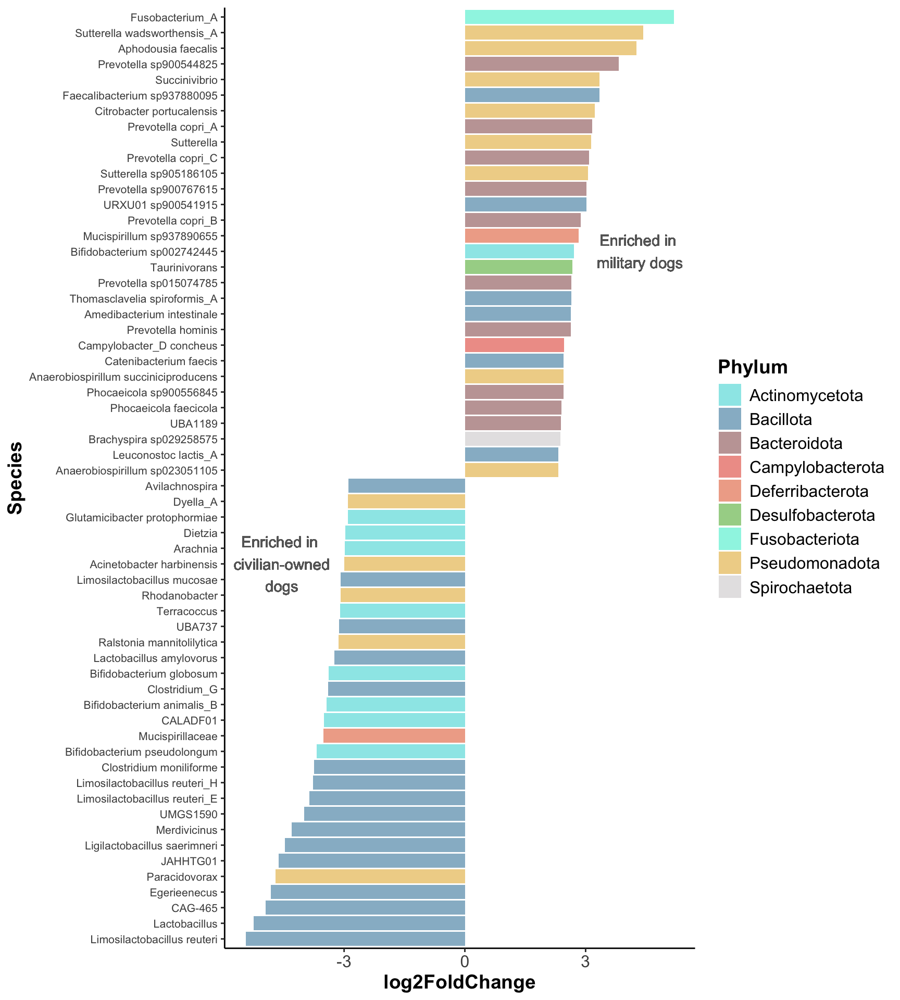
10.6 Functional differences
genome_counts_filt <- genome_counts_filt[genome_counts_filt$genome %in% rownames(genome_gifts),]
genome_counts_filt <- genome_counts_filt %>%
select(genome, all_of(sample_metadata$sample)) %>%
column_to_rownames(., "genome") %>%
filter(rowSums(. != 0, na.rm = TRUE) > 0) %>%
select_if(~!all(. == 0))%>%
rownames_to_column(., "genome")
genome_gifts <- genome_gifts[rownames(genome_gifts) %in% genome_counts_filt$genome,]
genome_gifts <- genome_gifts[, colSums(genome_gifts != 0) > 0]
GIFTs_elements <- to.elements(genome_gifts,GIFT_db)
GIFTs_elements_filtered <- GIFTs_elements[rownames(GIFTs_elements) %in% genome_counts_filt$genome,]
GIFTs_elements_filtered <- as.data.frame(GIFTs_elements_filtered) %>%
select_if(~ !is.numeric(.) || sum(.) != 0)
GIFTs_functions <- to.functions(GIFTs_elements_filtered,GIFT_db)
GIFTs_domains <- to.domains(GIFTs_functions,GIFT_db)
genome_counts_row <- genome_counts_filt %>%
mutate(across(-genome, ~ . / sum(.))) %>%
column_to_rownames(., "genome")
GIFTs_elements_community <- to.community(GIFTs_elements_filtered,genome_counts_row,GIFT_db)
GIFTs_functions_community <- to.community(GIFTs_functions,genome_counts_row,GIFT_db)
GIFTs_domains_community <- to.community(GIFTs_domains,genome_counts_row,GIFT_db)10.6.1 Different localities in Greenland
MCI
GIFTs_functions_community %>%
rowMeans() %>%
as_tibble(., rownames = "sample") %>%
left_join(sample_metadata, by = join_by(sample == sample)) %>%
group_by(locality) %>%
summarise(MCI = mean(value), sd = sd(value)) %>%
mutate(MCI = str_c(round(MCI, 3), "±", round(sd, 3))) %>%
select(-sd) %>%
tt()| locality | MCI |
|---|---|
| Daneborg | 0.378±0.005 |
| Disko | 0.376±0.008 |
| Illulissat | 0.377±0.005 |
| Ittoqqortoormiit | 0.376±0.009 |
MCI <- GIFTs_functions_community %>%
rowMeans() %>%
as_tibble(., rownames = "sample") %>%
left_join(sample_metadata, by = join_by(sample == sample))
shapiro.test(residuals(lm(value ~ locality, data = MCI)))
Shapiro-Wilk normality test
data: residuals(lm(value ~ locality, data = MCI))
W = 0.898, p-value = 6.068e-08
Bartlett test of homogeneity of variances
data: value by locality
Bartlett's K-squared = 17.227, df = 3, p-value = 0.0006348
Kruskal-Wallis rank sum test
data: value by locality
Kruskal-Wallis chi-squared = 1.3508, df = 3, p-value = 0.7171Enriched pathways
element_long <- GIFTs_elements_community %>%
as.data.frame() %>%
rownames_to_column(., "sample") %>%
filter(sample %in% sample_metadata$sample) %>%
left_join(sample_metadata %>% select(sample,locality), by="sample") %>%
pivot_longer(-c(sample,locality), names_to = "trait", values_to = "value")
uniqueGIFT_db <- unique(GIFT_db[c(2,4,5,6)]) %>% unite("Function",Function:Element, sep= "_", remove=FALSE)
significant_traits <- element_long %>%
group_by(trait) %>%
summarise(p_value = kruskal.test(value ~ locality)$p.value) %>%
mutate(p_adjust=p.adjust(p_value, method="BH")) %>%
filter(p_adjust < 0.05) %>%
pull(trait)
effect_sizes <- element_long %>%
group_by(trait) %>%
kruskal_effsize(value ~ locality)
kw_results <- element_long %>%
group_by(trait) %>%
summarise(p_value = kruskal.test(value ~ locality)$p.value) %>%
mutate(p_adjust=p.adjust(p_value, method="BH")) %>%
filter(p_adjust < 0.05) %>%
left_join(effect_sizes, by = "trait")
pairwise_results <- element_long %>%
filter(trait %in% significant_traits) %>%
group_by(trait) %>%
dunn_test(value ~ locality, p.adjust.method = "BH") %>%
filter(p.adj<0.05) %>%
mutate(comparison = paste(group1, "vs", group2)) %>%
left_join(uniqueGIFT_db, by = join_by(trait == Code_element))trait_summary <- element_long %>%
group_by(trait, locality) %>%
summarise(median_value = median(value, na.rm = TRUE), .groups = "drop")
trait_summary_sig <- trait_summary %>%
filter(trait %in% significant_traits)
trait_order <- kw_results %>%
arrange(desc(effsize)) %>%
pull(trait)
trait_summary_sig$trait <- factor(trait_summary_sig$trait, levels = trait_order)
trait_summary_sig <- trait_summary_sig %>%
group_by(trait) %>%
mutate(z_value = scale(median_value)[,1]) %>%
ungroup() %>%
left_join(uniqueGIFT_db, by = join_by(trait == Code_element))
ggplot(trait_summary_sig,
aes(locality, Function, fill = z_value)) +
geom_tile() +
scale_fill_gradient2(
low = "blue",
mid = "white",
high = "red",
midpoint = 0,
name = "Relative capacity"
) +
theme_minimal()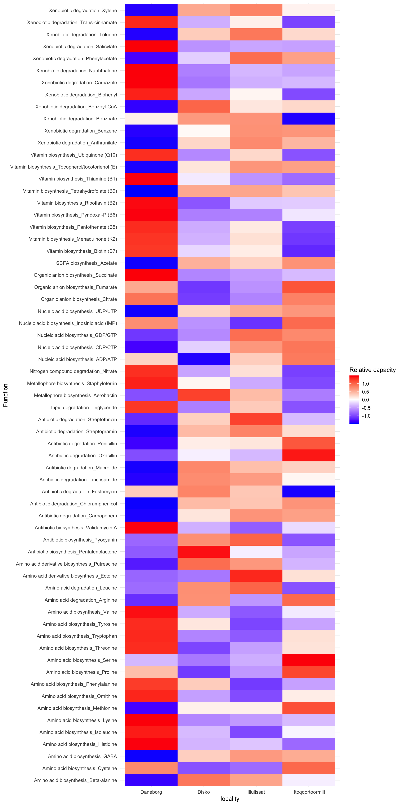
heatmap_matrix <- element_long %>%
filter(trait %in% significant_traits) %>%
group_by(trait, locality) %>%
summarise(median_value = median(value, na.rm = TRUE), .groups = "drop") %>%
pivot_wider(names_from = locality, values_from = median_value) %>%
left_join(uniqueGIFT_db %>% select(Code_element,Function), by = join_by(trait == Code_element)) %>%
column_to_rownames(., "Function") %>%
select(-trait) %>%
as.matrix()
heatmap_scaled <- t(scale(t(heatmap_matrix)))
sig_annotation <- kw_results %>%
left_join(uniqueGIFT_db %>% select(Code_element,Function), by = join_by(trait == Code_element)) %>%
select(-trait) %>%
filter(Function %in% rownames(heatmap_matrix)) %>%
select(Function, effsize)%>%
column_to_rownames("Function") %>%
as.data.frame()
pheatmap::pheatmap(
heatmap_scaled,
annotation_row = sig_annotation,
clustering_method = "complete",
clustering_distance_rows = "euclidean",
clustering_distance_cols = "euclidean",
scale = "none",
fontsize_row = 12,
fontsize_col = 12,
border_color = NA
)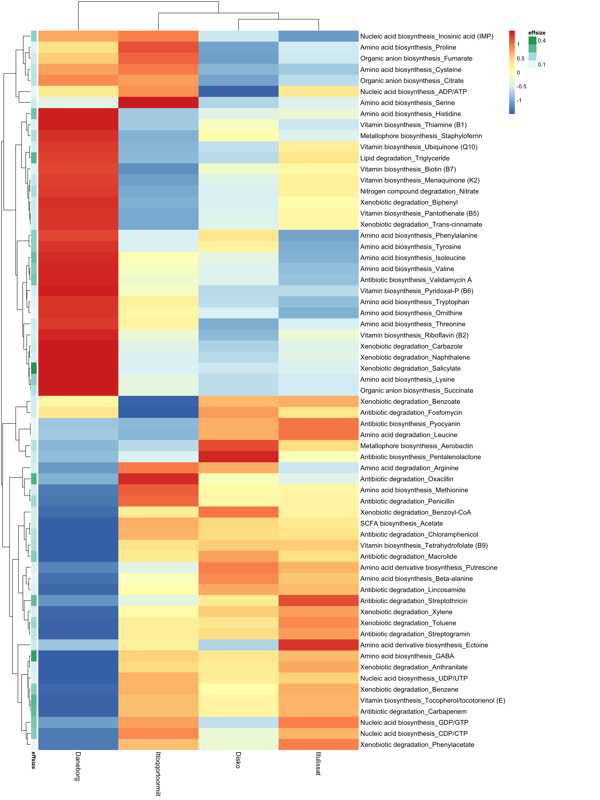
ggplot(pairwise_results, aes(x = comparison, y = fct_rev(Function))) +
geom_tile(aes(fill = p.adj), color = "white") +
geom_text(aes(label = p.adj.signif), size = 4, color = "black") +
scale_fill_gradient(low = "#b30000", high = "#fef0d9" , name = "Adjusted p-value") +
theme_minimal() +
labs(
title = "Significant Pairwise Comparisons by Trait",
x = "Locality Comparison",
y = "Trait"
) +
theme(
axis.text.x = element_text(angle = 45, hjust = 1),
panel.grid = element_blank()
)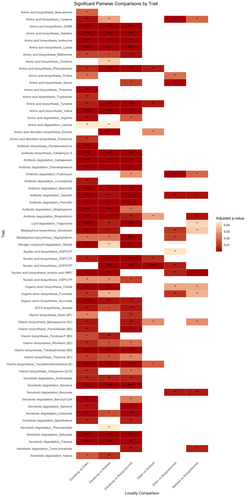
element_gift <- GIFTs_elements_community %>%
as.data.frame() %>%
rownames_to_column(., "sample") %>%
filter(sample %in% sample_metadata$sample) %>%
left_join(sample_metadata %>% select(sample,locality), by="sample")
plot_data <- element_gift %>%
pivot_longer(-c(sample, locality), names_to = "trait", values_to = "value") %>%
filter(trait %in% pairwise_results$trait)%>%
left_join(., uniqueGIFT_db, by=join_by(trait==Code_element))
ggplot(plot_data, aes(x = locality, y = value, fill = locality)) +
geom_boxplot(outlier.shape = NA, alpha = 0.7) +
facet_wrap(~ Function, scales = "free_y", ncol = 4) +
theme_minimal(base_size = 16) +
theme(strip.text = element_text(size = 25, lineheight = 0.6))+
labs(
title = "Trait Distributions Across Localities",
x = "Locality",
y = "Trait Value" )
10.6.2 Military vs civilian-owned dogs
sample_metadata <- sample_metadata %>%
mutate(
dog_group = case_when(
locality == "Daneborg" ~ "military",
TRUE ~ "civilian"
)
)MCI
GIFTs_functions_community %>%
rowMeans() %>%
as_tibble(., rownames = "sample") %>%
left_join(sample_metadata, by = join_by(sample == sample)) %>%
group_by(dog_group) %>%
summarise(MCI = mean(value), sd = sd(value)) %>%
tt()| dog_group | MCI | sd |
|---|---|---|
| civilian | 0.3759556 | 0.008008111 |
| military | 0.3779855 | 0.004990014 |
MCI <- GIFTs_functions_community %>%
rowMeans() %>%
as_tibble(., rownames = "sample") %>%
left_join(sample_metadata, by = join_by(sample == sample))
shapiro.test(residuals(lm(value ~ dog_group, data = MCI)))
Shapiro-Wilk normality test
data: residuals(lm(value ~ dog_group, data = MCI))
W = 0.89432, p-value = 3.912e-08
Bartlett test of homogeneity of variances
data: value by dog_group
Bartlett's K-squared = 7.9999, df = 1, p-value = 0.004678
Wilcoxon rank sum test with continuity correction
data: value by dog_group
W = 1258, p-value = 0.2493
alternative hypothesis: true location shift is not equal to 0Enriched pathways
enrichment_results <- GIFTs_elements_community %>%
as.data.frame() %>%
rownames_to_column(., "sample") %>%
filter(sample %in% sample_metadata$sample) %>%
left_join(sample_metadata %>% select(sample,dog_group), by="sample")%>%
pivot_longer(-c(sample,dog_group),
names_to="trait",
values_to="value") %>%
group_by(trait) %>%
summarise(
p_value = wilcox.test(value ~ dog_group)$p.value,
median_military = median(value[dog_group=="military"]),
median_civilian = median(value[dog_group=="civilian"]),
log2FC = log2((median_military + 1) /
(median_civilian + 1)),
difference = median_military - median_civilian) %>%
mutate(p_adjust = p.adjust(p_value,"BH")) %>%
filter(p_adjust<0.05) uniqueGIFT_db<- unique(GIFT_db[c(2,3,4,5,6)]) %>% unite("Function",Function:Element, sep= "_", remove=FALSE)
enrichment_code <- enrichment_results %>%
left_join(uniqueGIFT_db[c(1:4)], by=join_by(trait==Code_element))
unique_codes<-unique(enrichment_code$Code_function)
gift_colors <- read_tsv("data/gift_colors.tsv") %>%
filter(Code_function %in% unique_codes)%>%
mutate(legend=str_c(Code_function," - ",Function))enrichment_code %>%
left_join(gift_colors[c(1,3,4)], by=join_by(Code_function==Code_function))%>%
ggplot(aes(x=forcats::fct_reorder(Function,log2FC), y=log2FC, fill=legend)) +
geom_col() +
scale_color_manual(values = gift_colors$Color)+
geom_hline(yintercept=0) +
coord_flip()+
geom_text(aes(45, 0.040), label = "Enriched in\n Danenborg", color="#666666") +
geom_text(aes(9, -0.040), label = "Enriched in\n civilian ", color="#666666") +
theme(axis.text = element_text(size = 10),
axis.title = element_text(size = 12),
legend.position = "right",
panel.background = element_blank())+
xlab("Microbial Functional Capacity") +
ylab("log2FC")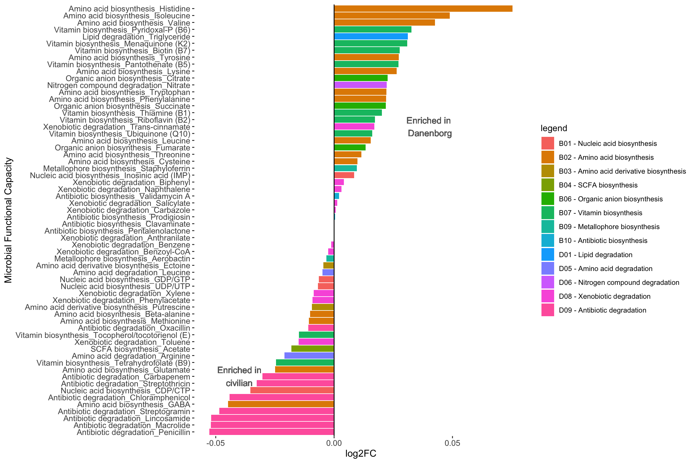
Effect size: log2FC
Military
enrichment_code %>%
left_join(unique(GIFT_db[c(2,4,5,6)]), by=join_by("trait"=="Code_element")) %>%
filter(log2FC>0) %>%
group_by(Function.y) %>%
summarise(count=n()) %>%
arrange(-count)# A tibble: 9 × 2
Function.y count
<chr> <int>
1 Amino acid biosynthesis 10
2 Vitamin biosynthesis 7
3 Xenobiotic degradation 5
4 Organic anion biosynthesis 3
5 Antibiotic biosynthesis 2
6 Lipid degradation 1
7 Metallophore biosynthesis 1
8 Nitrogen compound degradation 1
9 Nucleic acid biosynthesis 1 [1] "Nucleic acid biosynthesis_Inosinic acid (IMP)" "Amino acid biosynthesis_Threonine" "Amino acid biosynthesis_Cysteine"
[4] "Amino acid biosynthesis_Valine" "Amino acid biosynthesis_Isoleucine" "Amino acid biosynthesis_Leucine"
[7] "Amino acid biosynthesis_Lysine" "Amino acid biosynthesis_Histidine" "Amino acid biosynthesis_Tryptophan"
[10] "Amino acid biosynthesis_Phenylalanine" "Amino acid biosynthesis_Tyrosine" "Organic anion biosynthesis_Succinate"
[13] "Organic anion biosynthesis_Fumarate" "Organic anion biosynthesis_Citrate" "Vitamin biosynthesis_Thiamine (B1)"
[16] "Vitamin biosynthesis_Riboflavin (B2)" "Vitamin biosynthesis_Pantothenate (B5)" "Vitamin biosynthesis_Pyridoxal-P (B6)"
[19] "Vitamin biosynthesis_Biotin (B7)" "Vitamin biosynthesis_Menaquinone (K2)" "Vitamin biosynthesis_Ubiquinone (Q10)"
[22] "Metallophore biosynthesis_Staphyloferrin" "Antibiotic biosynthesis_Prodigiosin" "Antibiotic biosynthesis_Validamycin A"
[25] "Lipid degradation_Triglyceride" "Nitrogen compound degradation_Nitrate" "Xenobiotic degradation_Biphenyl"
[28] "Xenobiotic degradation_Carbazole" "Xenobiotic degradation_Naphthalene" "Xenobiotic degradation_Salicylate"
[31] "Xenobiotic degradation_Trans-cinnamate" Civilian
enrichment_code %>%
left_join(unique(GIFT_db[c(2,4,5,6)]), by=join_by("trait"=="Code_element")) %>%
filter(log2FC<0) %>%
group_by(Function.y) %>%
summarise(count=n())%>%
arrange(-count)# A tibble: 10 × 2
Function.y count
<chr> <int>
1 Antibiotic degradation 8
2 Xenobiotic degradation 6
3 Amino acid biosynthesis 4
4 Nucleic acid biosynthesis 3
5 Amino acid degradation 2
6 Amino acid derivative biosynthesis 2
7 Vitamin biosynthesis 2
8 Antibiotic biosynthesis 1
9 Metallophore biosynthesis 1
10 SCFA biosynthesis 1 [1] "Nucleic acid biosynthesis_UDP/UTP" "Nucleic acid biosynthesis_CDP/CTP" "Nucleic acid biosynthesis_GDP/GTP"
[4] "Amino acid biosynthesis_Methionine" "Amino acid biosynthesis_Glutamate" "Amino acid biosynthesis_GABA"
[7] "Amino acid biosynthesis_Beta-alanine" "Amino acid derivative biosynthesis_Ectoine" "Amino acid derivative biosynthesis_Putrescine"
[10] "SCFA biosynthesis_Acetate" "Vitamin biosynthesis_Tetrahydrofolate (B9)" "Vitamin biosynthesis_Tocopherol/tocotorienol (E)"
[13] "Metallophore biosynthesis_Aerobactin" "Antibiotic biosynthesis_Pentalenolactone" "Amino acid degradation_Leucine"
[16] "Amino acid degradation_Arginine" "Xenobiotic degradation_Toluene" "Xenobiotic degradation_Xylene"
[19] "Xenobiotic degradation_Benzene" "Xenobiotic degradation_Anthranilate" "Xenobiotic degradation_Benzoyl-CoA"
[22] "Xenobiotic degradation_Phenylacetate" "Antibiotic degradation_Penicillin" "Antibiotic degradation_Carbapenem"
[25] "Antibiotic degradation_Oxacillin" "Antibiotic degradation_Streptogramin" "Antibiotic degradation_Macrolide"
[28] "Antibiotic degradation_Chloramphenicol" "Antibiotic degradation_Lincosamide" "Antibiotic degradation_Streptothricin" element_gift <- GIFTs_elements_community %>%
as.data.frame() %>%
rownames_to_column(., "sample") %>%
filter(sample %in% sample_metadata$sample) %>%
left_join(sample_metadata %>% select(sample,dog_group), by="sample")
plot_data <- element_gift %>%
pivot_longer(-c(sample, dog_group), names_to = "trait", values_to = "value") %>%
filter(trait %in% enrichment_code$trait)%>%
left_join(., uniqueGIFT_db, by=join_by(trait==Code_element))
ggplot(plot_data, aes(x = dog_group, y = value, fill = dog_group)) +
geom_boxplot(outlier.shape = NA, alpha = 0.7) +
facet_wrap(~ Function, scales = "free_y", ncol = 4) +
theme_minimal(base_size = 16) +
labs(
title = "Trait Distributions Across Localities",
x = "Locality",
y = "Trait Value" )